Iozone results for frewrite, data are arranged by block size
- Baseline data set
- ./ext4/ext4_1.iozone
- ./ext4/ext4_2.iozone
- ./ext4/ext4_3.iozone
- ./ext4/ext4_4.iozone
- ./ext4/ext4_5.iozone
- Investigated data set
- ./xfs/xfs1.iozone
- ./xfs/xfs2.iozone
- ./xfs/xfs3.iozone
- ./xfs/xfs4.iozone
- ./xfs/xfs5.iozone
mean => Arithmetic mean
standar dev. => Sample standard deviation
ci. max 90%, ci.min => confidence interval at confidence level 90% => it means that mean value of the distribution lies with 90% propability in interval ci_min-ci_max
geom. mean => Geometric mean
median => Second quartile = cuts data set in half = 50th percentile
first quartile => cuts off lowest 25% of data = 25th percentile
third quartile => cuts off highest 25% of data, or lowest 75% = 75th percentile
minimum => Lowest value of data set
maximum => Hightest value of data set
baseline set1 difference => Difference of medians of both sets in percennt. Arithmetic means are used in detail mode instead.
ttest p-value => Student's t-test p-value = probability the both data sets are equal
ttest equality => If p-value is higher than 0.1, data sets are considered being equal with 90% probability. Otherwise the data sets are considered being different.
Linear regression of all results regression line is in y = ax form, b coeficient is zero.
for details about operations performed see Iozone documentation
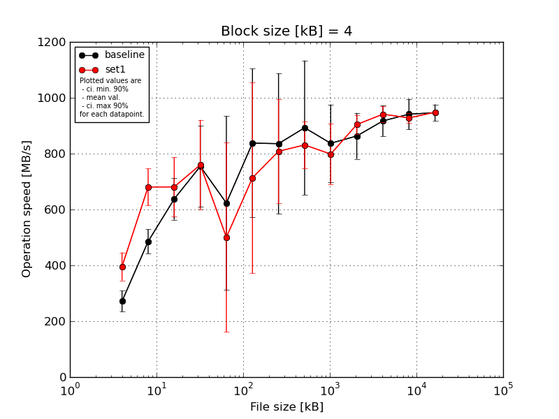
|
Block size [kB] |
File size [kB] |
| 4 |
8 |
16 |
32 |
64 |
128 |
256 |
512 |
1024 |
2048 |
4096 |
8192 |
16384 |
| baseline | 4 | 298.95 | 521.74 | 676.98 | 892.83 | 907.68 | 1024.39 | 1073.47 | 1178.97 | 1018.33 | 1010.58 | 1007.05 | 1025.13 | 994.34 |
| 4 | 298.95 | 490.5 | 650.12 | 639.98 | 644.4 | 743.88 | 726.76 | 650.32 | 784.3 | 854.69 | 897.86 | 929.46 | 937.59 |
| 4 | 304.5 | 483.26 | 706.16 | 846.69 | 308.11 | 1085.92 | 1137.52 | 1146.73 | 962.48 | 828.52 | 937.86 | 968.86 | 959.11 |
| 4 | 228.17 | 521.74 | 504.88 | 546.58 | 276.58 | 939.91 | 735.43 | 791.14 | 688.74 | 836.45 | 867.14 | 904.07 | 922.51 |
| 4 | 228.17 | 410.6 | 650.12 | 846.69 | 978.86 | 394.26 | 505.14 | 696.54 | 731.63 | 785.54 | 875.28 | 879.04 | 918.38 |
| mean val. |
271.75 |
485.57 |
637.65 |
754.55 |
623.13 |
837.67 |
835.67 |
892.74 |
837.1 |
863.15 |
917.04 |
941.31 |
946.39 |
| standard dev. |
39.84 |
45.46 |
77.75 |
152.05 |
326.84 |
279.44 |
264.02 |
252.0 |
145.33 |
86.23 |
57.31 |
57.42 |
31.2 |
| ci. min. 90% |
233.76 |
442.22 |
563.53 |
609.59 |
311.52 |
571.25 |
583.95 |
652.48 |
698.54 |
780.94 |
862.4 |
886.57 |
916.64 |
| ci. max 90% |
309.73 |
528.91 |
711.78 |
899.52 |
934.73 |
1104.09 |
1087.38 |
1133.0 |
975.66 |
945.37 |
971.67 |
996.06 |
976.13 |
| geom. mean |
269.31 |
483.76 |
633.48 |
741.32 |
546.6 |
789.45 |
800.98 |
865.08 |
827.22 |
859.92 |
915.64 |
939.93 |
945.98 |
| median |
298.95 |
490.5 |
650.12 |
846.69 |
644.4 |
939.91 |
735.43 |
791.14 |
784.3 |
836.45 |
897.86 |
929.46 |
937.59 |
| first quartile |
228.17 |
483.26 |
650.12 |
639.98 |
308.11 |
743.88 |
726.76 |
696.54 |
731.63 |
828.52 |
875.28 |
904.07 |
922.51 |
| third quartile |
298.95 |
521.74 |
676.98 |
846.69 |
907.68 |
1024.39 |
1073.47 |
1146.73 |
962.48 |
854.69 |
937.86 |
968.86 |
959.11 |
| minimum |
228.17 |
410.6 |
504.88 |
546.58 |
276.58 |
394.26 |
505.14 |
650.32 |
688.74 |
785.54 |
867.14 |
879.04 |
918.38 |
| maximum |
304.5 |
521.74 |
706.16 |
892.83 |
978.86 |
1085.92 |
1137.52 |
1178.97 |
1018.33 |
1010.58 |
1007.05 |
1025.13 |
994.34 |
| set1 | 4 | 433.37 | 715.37 | 602.32 | 944.28 | 657.32 | 1106.55 | 1136.29 | 863.8 | 947.91 | 890.53 | 966.16 | 905.19 | 951.98 |
| 4 | 357.68 | 700.08 | 782.0 | 649.5 | 241.21 | 1085.92 | 750.7 | 907.54 | 855.49 | 852.52 | 899.3 | 935.24 | 946.18 |
| 4 | 433.37 | 557.22 | 596.84 | 944.28 | 276.58 | 578.81 | 606.88 | 740.83 | 689.19 | 924.28 | 958.76 | 924.11 | 954.83 |
| 4 | 322.48 | 715.37 | 821.19 | 636.87 | 1057.86 | 435.53 | 779.14 | 912.68 | 821.16 | 905.82 | 960.85 | 955.21 | 944.07 |
| 4 | 433.37 | 715.37 | 602.32 | 624.73 | 269.2 | 360.14 | 769.42 | 731.02 | 678.38 | 947.89 | 921.02 | 920.36 | 943.56 |
| mean val. |
396.06 |
680.68 |
680.93 |
759.93 |
500.43 |
713.39 |
808.49 |
831.17 |
798.43 |
904.21 |
941.22 |
928.02 |
948.12 |
| standard dev. |
52.59 |
69.33 |
111.04 |
168.52 |
355.71 |
358.28 |
196.1 |
89.07 |
114.52 |
35.96 |
29.5 |
18.62 |
5.02 |
| ci. min. 90% |
345.92 |
614.58 |
575.07 |
599.27 |
161.3 |
371.81 |
621.52 |
746.26 |
689.24 |
869.92 |
913.1 |
910.27 |
943.34 |
| ci. max 90% |
446.2 |
746.78 |
786.8 |
920.59 |
839.56 |
1054.97 |
995.45 |
916.09 |
907.61 |
938.49 |
969.34 |
945.77 |
952.91 |
| geom. mean |
393.11 |
677.57 |
673.96 |
745.6 |
416.19 |
642.03 |
791.35 |
827.27 |
791.85 |
903.63 |
940.85 |
927.88 |
948.11 |
| median |
433.37 |
715.37 |
602.32 |
649.5 |
276.58 |
578.81 |
769.42 |
863.8 |
821.16 |
905.82 |
958.76 |
924.11 |
946.18 |
| first quartile |
357.68 |
700.08 |
602.32 |
636.87 |
269.2 |
435.53 |
750.7 |
740.83 |
689.19 |
890.53 |
921.02 |
920.36 |
944.07 |
| third quartile |
433.37 |
715.37 |
782.0 |
944.28 |
657.32 |
1085.92 |
779.14 |
907.54 |
855.49 |
924.28 |
960.85 |
935.24 |
951.98 |
| minimum |
322.48 |
557.22 |
596.84 |
624.73 |
241.21 |
360.14 |
606.88 |
731.02 |
678.38 |
852.52 |
899.3 |
905.19 |
943.56 |
| maximum |
433.37 |
715.37 |
821.19 |
944.28 |
1057.86 |
1106.55 |
1136.29 |
912.68 |
947.91 |
947.89 |
966.16 |
955.21 |
954.83 |
| baseline set1 difference |
45.74 % |
40.18 % |
6.79 % |
0.71 % |
-19.69 % |
-14.84 % |
-3.25 % |
-6.9 % |
-4.62 % |
4.76 % |
2.64 % |
-1.41 % |
0.18 % |
| ttest p-value |
0.0029 |
0.0008 |
0.4956 |
0.959 |
0.5857 |
0.5578 |
0.858 |
0.6204 |
0.6527 |
0.3546 |
0.4258 |
0.6358 |
0.9052 |
| ttest equality |
DIFF |
DIFF |
SAME |
SAME |
SAME |
SAME |
SAME |
SAME |
SAME |
SAME |
SAME |
SAME |
SAME |
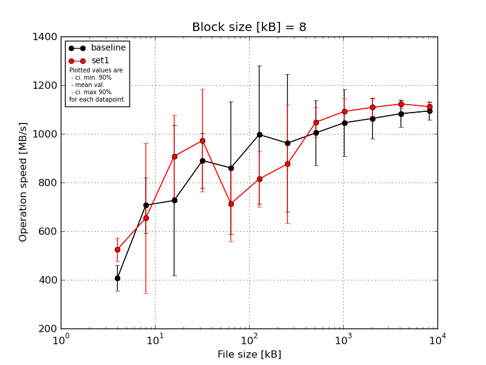
|
Block size [kB] |
File size [kB] |
| 8 |
16 |
32 |
64 |
128 |
256 |
512 |
1024 |
2048 |
4096 |
8192 |
16384 |
| baseline | 8 | 490.5 | 821.19 | 972.3 | 880.25 | 1301.59 | 1213.9 | 1408.61 | 1141.68 | 1268.16 | 1193.36 | 1151.89 | 1153.39 |
| 8 | 368.98 | 575.86 | 979.57 | 762.48 | 816.89 | 588.16 | 728.73 | 936.27 | 956.86 | 1003.97 | 1072.99 | 1071.45 |
| 8 | 432.26 | 772.78 | 193.95 | 975.22 | 499.89 | 1336.1 | 847.4 | 1104.98 | 1113.61 | 1117.97 | 1132.19 | 1109.79 |
| 8 | 356.93 | 782.0 | 666.0 | 792.44 | 850.0 | 1007.46 | 1113.84 | 1040.56 | 948.74 | 1010.14 | 1019.0 | 1074.85 |
| 8 | 391.0 | 580.96 | 820.2 | 1041.06 | 832.46 | 838.99 | 711.43 | 796.82 | 939.81 | 991.57 | 1039.26 | 1060.58 |
| mean val. |
407.93 |
706.56 |
726.4 |
890.29 |
860.17 |
996.92 |
962.0 |
1004.06 |
1045.44 |
1063.4 |
1083.07 |
1094.01 |
| standard dev. |
54.35 |
118.4 |
324.23 |
118.27 |
286.09 |
297.6 |
297.01 |
139.64 |
143.7 |
88.59 |
57.61 |
37.98 |
| ci. min. 90% |
356.12 |
593.68 |
417.28 |
777.53 |
587.41 |
713.2 |
678.84 |
870.93 |
908.43 |
978.94 |
1028.14 |
1057.8 |
| ci. max 90% |
459.75 |
819.44 |
1035.53 |
1003.05 |
1132.93 |
1280.65 |
1245.17 |
1137.2 |
1182.44 |
1147.87 |
1137.99 |
1130.22 |
| geom. mean |
405.16 |
698.29 |
632.1 |
884.05 |
822.36 |
957.86 |
928.28 |
995.83 |
1037.98 |
1060.54 |
1081.84 |
1093.49 |
| median |
391.0 |
772.78 |
820.2 |
880.25 |
832.46 |
1007.46 |
847.4 |
1040.56 |
956.86 |
1010.14 |
1072.99 |
1074.85 |
| first quartile |
368.98 |
580.96 |
666.0 |
792.44 |
816.89 |
838.99 |
728.73 |
936.27 |
948.74 |
1003.97 |
1039.26 |
1071.45 |
| third quartile |
432.26 |
782.0 |
972.3 |
975.22 |
850.0 |
1213.9 |
1113.84 |
1104.98 |
1113.61 |
1117.97 |
1132.19 |
1109.79 |
| minimum |
356.93 |
575.86 |
193.95 |
762.48 |
499.89 |
588.16 |
711.43 |
796.82 |
939.81 |
991.57 |
1019.0 |
1060.58 |
| maximum |
490.5 |
821.19 |
979.57 |
1041.06 |
1301.59 |
1336.1 |
1408.61 |
1141.68 |
1268.16 |
1193.36 |
1151.89 |
1153.39 |
| set1 | 8 | 609.01 | 966.53 | 1122.14 | 802.14 | 780.42 | 603.74 | 887.94 | 1016.11 | 1111.69 | 1174.07 | 1147.29 | 1139.86 |
| 8 | 521.74 | 105.57 | 1076.07 | 1203.57 | 444.76 | 850.56 | 929.26 | 1082.18 | 1046.51 | 1082.55 | 1097.42 | 1091.54 |
| 8 | 490.5 | 746.38 | 758.49 | 1226.08 | 832.46 | 886.52 | 1231.59 | 1015.13 | 1172.28 | 1075.27 | 1128.99 | 1126.2 |
| 8 | 521.74 | 706.16 | 762.91 | 799.69 | 828.51 | 850.56 | 516.56 | 1142.92 | 1100.03 | 1109.62 | 1115.44 | 1097.54 |
| 8 | 483.26 | 746.38 | 820.2 | 832.72 | 679.3 | 880.56 | 818.62 | 984.39 | 1028.8 | 1102.25 | 1124.71 | 1105.04 |
| mean val. |
525.25 |
654.2 |
907.96 |
972.84 |
713.09 |
814.39 |
876.79 |
1048.14 |
1091.86 |
1108.75 |
1122.77 |
1112.03 |
| standard dev. |
50.03 |
323.36 |
176.93 |
221.43 |
162.21 |
118.92 |
255.88 |
63.88 |
56.92 |
39.1 |
18.3 |
20.33 |
| ci. min. 90% |
477.55 |
345.91 |
739.28 |
761.73 |
558.44 |
701.01 |
632.84 |
987.24 |
1037.59 |
1071.47 |
1105.32 |
1092.65 |
| ci. max 90% |
572.94 |
962.49 |
1076.65 |
1183.95 |
867.74 |
927.77 |
1120.75 |
1109.05 |
1146.13 |
1146.03 |
1140.22 |
1131.42 |
| geom. mean |
523.44 |
525.67 |
894.63 |
953.53 |
695.4 |
806.38 |
844.58 |
1046.62 |
1090.68 |
1108.21 |
1122.65 |
1111.89 |
| median |
521.74 |
746.38 |
820.2 |
832.72 |
780.42 |
850.56 |
887.94 |
1016.11 |
1100.03 |
1102.25 |
1124.71 |
1105.04 |
| first quartile |
490.5 |
706.16 |
762.91 |
802.14 |
679.3 |
850.56 |
818.62 |
1015.13 |
1046.51 |
1082.55 |
1115.44 |
1097.54 |
| third quartile |
521.74 |
746.38 |
1076.07 |
1203.57 |
828.51 |
880.56 |
929.26 |
1082.18 |
1111.69 |
1109.62 |
1128.99 |
1126.2 |
| minimum |
483.26 |
105.57 |
758.49 |
799.69 |
444.76 |
603.74 |
516.56 |
984.39 |
1028.8 |
1075.27 |
1097.42 |
1091.54 |
| maximum |
609.01 |
966.53 |
1122.14 |
1226.08 |
832.46 |
886.52 |
1231.59 |
1142.92 |
1172.28 |
1174.07 |
1147.29 |
1139.86 |
| baseline set1 difference |
28.76 % |
-7.41 % |
24.99 % |
9.27 % |
-17.1 % |
-18.31 % |
-8.86 % |
4.39 % |
4.44 % |
4.26 % |
3.67 % |
1.65 % |
| ttest p-value |
0.0075 |
0.7426 |
0.3037 |
0.4831 |
0.3466 |
0.2386 |
0.64 |
0.5389 |
0.5208 |
0.3256 |
0.1801 |
0.3769 |
| ttest equality |
DIFF |
SAME |
SAME |
SAME |
SAME |
SAME |
SAME |
SAME |
SAME |
SAME |
SAME |
SAME |
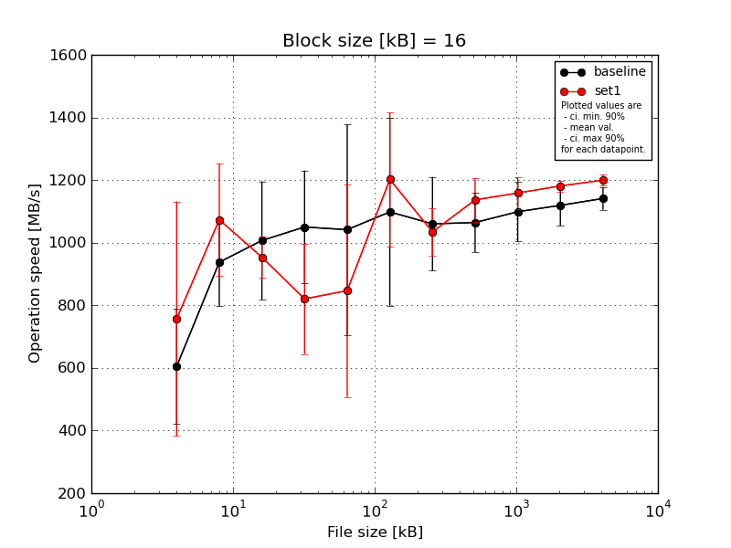
|
Block size [kB] |
File size [kB] |
| 16 |
32 |
64 |
128 |
256 |
512 |
1024 |
2048 |
4096 |
8192 |
16384 |
| baseline | 16 | 782.0 | 1112.61 | 1226.08 | 1358.94 | 771.69 | 1470.85 | 1199.12 | 1189.74 | 1242.59 | 1211.01 | 1207.74 |
| 16 | 538.04 | 869.14 | 822.27 | 912.11 | 1419.29 | 761.27 | 963.36 | 1063.36 | 1094.7 | 1118.12 | 1134.02 |
| 16 | 782.0 | 825.36 | 1203.57 | 1106.55 | 654.21 | 1330.0 | 1145.42 | 1130.57 | 1134.38 | 1151.89 | 1122.73 |
| 16 | 602.32 | 805.08 | 822.27 | 933.22 | 965.71 | 801.11 | 1161.6 | 990.53 | 1047.41 | 1081.81 | 1124.76 |
| 16 | 319.99 | 1076.07 | 960.92 | 939.91 | 1396.6 | 1128.22 | 831.25 | 947.46 | 975.15 | 1033.44 | 1116.62 |
| mean val. |
604.87 |
937.65 |
1007.02 |
1050.15 |
1041.5 |
1098.29 |
1060.15 |
1064.33 |
1098.85 |
1119.25 |
1141.18 |
| standard dev. |
192.6 |
145.47 |
198.12 |
189.35 |
352.62 |
314.36 |
157.04 |
99.02 |
99.86 |
67.55 |
37.73 |
| ci. min. 90% |
421.25 |
798.96 |
818.13 |
869.62 |
705.32 |
798.58 |
910.43 |
969.92 |
1003.64 |
1054.85 |
1105.2 |
| ci. max 90% |
788.49 |
1076.35 |
1195.91 |
1230.67 |
1377.68 |
1398.0 |
1209.87 |
1158.74 |
1194.05 |
1183.66 |
1177.15 |
| geom. mean |
576.02 |
928.86 |
991.61 |
1037.67 |
993.18 |
1061.23 |
1050.22 |
1060.65 |
1095.25 |
1117.63 |
1140.69 |
| median |
602.32 |
869.14 |
960.92 |
939.91 |
965.71 |
1128.22 |
1145.42 |
1063.36 |
1094.7 |
1118.12 |
1124.76 |
| first quartile |
538.04 |
825.36 |
822.27 |
933.22 |
771.69 |
801.11 |
963.36 |
990.53 |
1047.41 |
1081.81 |
1122.73 |
| third quartile |
782.0 |
1076.07 |
1203.57 |
1106.55 |
1396.6 |
1330.0 |
1161.6 |
1130.57 |
1134.38 |
1151.89 |
1134.02 |
| minimum |
319.99 |
805.08 |
822.27 |
912.11 |
654.21 |
761.27 |
831.25 |
947.46 |
975.15 |
1033.44 |
1116.62 |
| maximum |
782.0 |
1112.61 |
1226.08 |
1358.94 |
1419.29 |
1470.85 |
1199.12 |
1189.74 |
1242.59 |
1211.01 |
1207.74 |
| set1 | 16 | 980.99 | 1300.24 | 907.68 | 529.69 | 534.22 | 1278.9 | 1037.22 | 1212.96 | 1232.28 | 1201.21 | 1210.0 |
| 16 | 1043.47 | 979.57 | 947.03 | 962.34 | 1428.96 | 856.05 | 904.96 | 1106.85 | 1190.82 | 1157.58 | 1188.7 |
| 16 | 102.91 | 917.83 | 1075.22 | 743.88 | 622.0 | 1125.8 | 1046.01 | 1188.39 | 1130.86 | 1198.68 | 1227.28 |
| 16 | 980.99 | 1250.62 | 920.43 | 933.22 | 926.46 | 1305.17 | 1064.06 | 1026.66 | 1142.18 | 1174.39 | 1193.16 |
| 16 | 676.98 | 917.83 | 917.21 | 933.22 | 722.75 | 1444.51 | 1119.73 | 1148.84 | 1096.78 | 1174.22 | 1179.34 |
| mean val. |
757.07 |
1073.22 |
953.51 |
820.47 |
846.88 |
1202.09 |
1034.39 |
1136.74 |
1158.58 |
1181.22 |
1199.7 |
| standard dev. |
392.63 |
187.13 |
69.58 |
184.37 |
356.68 |
224.09 |
79.15 |
73.55 |
53.22 |
18.43 |
19.01 |
| ci. min. 90% |
382.74 |
894.81 |
887.18 |
644.69 |
506.83 |
988.44 |
958.93 |
1066.62 |
1107.85 |
1163.64 |
1181.57 |
| ci. max 90% |
1131.4 |
1251.63 |
1019.85 |
996.25 |
1186.93 |
1415.73 |
1109.86 |
1206.86 |
1209.32 |
1198.79 |
1217.82 |
| geom. mean |
587.45 |
1060.58 |
951.59 |
801.24 |
795.19 |
1183.69 |
1031.86 |
1134.79 |
1157.61 |
1181.1 |
1199.58 |
| median |
980.99 |
979.57 |
920.43 |
933.22 |
722.75 |
1278.9 |
1046.01 |
1148.84 |
1142.18 |
1174.39 |
1193.16 |
| first quartile |
676.98 |
917.83 |
917.21 |
743.88 |
622.0 |
1125.8 |
1037.22 |
1106.85 |
1130.86 |
1174.22 |
1188.7 |
| third quartile |
980.99 |
1250.62 |
947.03 |
933.22 |
926.46 |
1305.17 |
1064.06 |
1188.39 |
1190.82 |
1198.68 |
1210.0 |
| minimum |
102.91 |
917.83 |
907.68 |
529.69 |
534.22 |
856.05 |
904.96 |
1026.66 |
1096.78 |
1157.58 |
1179.34 |
| maximum |
1043.47 |
1300.24 |
1075.22 |
962.34 |
1428.96 |
1444.51 |
1119.73 |
1212.96 |
1232.28 |
1201.21 |
1227.28 |
| baseline set1 difference |
25.16 % |
14.46 % |
-5.31 % |
-21.87 % |
-18.69 % |
9.45 % |
-2.43 % |
6.8 % |
5.44 % |
5.54 % |
5.13 % |
| ttest p-value |
0.4588 |
0.2368 |
0.5845 |
0.0879 |
0.4108 |
0.5644 |
0.7517 |
0.2257 |
0.2717 |
0.0832 |
0.0147 |
| ttest equality |
SAME |
SAME |
SAME |
DIFF |
SAME |
SAME |
SAME |
SAME |
SAME |
DIFF |
DIFF |
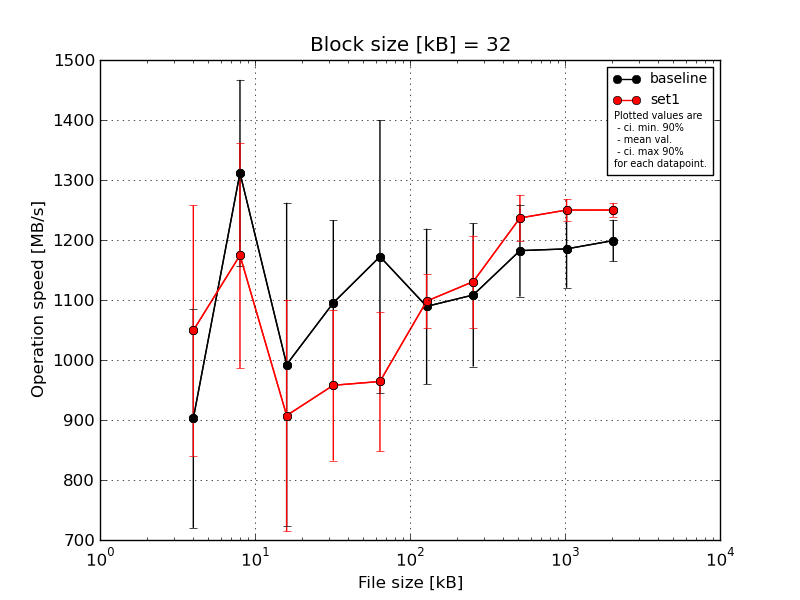
|
Block size [kB] |
File size [kB] |
| 32 |
64 |
128 |
256 |
512 |
1024 |
2048 |
4096 |
8192 |
16384 |
| baseline | 32 | 1112.61 | 1426.2 | 536.19 | 1351.6 | 1537.72 | 1267.62 | 1232.93 | 1280.82 | 1278.76 | 1244.17 |
| 32 | 762.91 | 1024.78 | 1051.09 | 1049.83 | 1184.96 | 1015.13 | 1031.96 | 1077.89 | 1174.22 | 1213.41 |
| 32 | 1112.61 | 1359.63 | 1317.95 | 1037.37 | 925.97 | 1198.78 | 1256.19 | 1229.66 | 1226.77 | 1209.46 |
| 32 | 762.91 | 1359.63 | 1024.39 | 995.98 | 996.36 | 953.08 | 1021.41 | 1193.7 | 1132.65 | 1179.75 |
| 32 | 762.91 | 1388.43 | 1032.46 | 1041.49 | 1216.58 | 1012.19 | 999.5 | 1129.26 | 1113.59 | 1148.36 |
| mean val. |
902.79 |
1311.73 |
992.41 |
1095.25 |
1172.32 |
1089.36 |
1108.4 |
1182.27 |
1185.2 |
1199.03 |
| standard dev. |
191.54 |
162.72 |
282.92 |
144.8 |
238.37 |
135.82 |
125.12 |
80.3 |
67.99 |
36.37 |
| ci. min. 90% |
720.18 |
1156.59 |
722.68 |
957.2 |
945.06 |
959.87 |
989.11 |
1105.71 |
1120.37 |
1164.35 |
| ci. max 90% |
1085.4 |
1466.87 |
1262.15 |
1233.31 |
1399.58 |
1218.85 |
1227.69 |
1258.82 |
1250.02 |
1233.71 |
| geom. mean |
887.2 |
1302.67 |
952.88 |
1088.33 |
1153.85 |
1082.75 |
1102.88 |
1180.07 |
1183.65 |
1198.59 |
| median |
762.91 |
1359.63 |
1032.46 |
1041.49 |
1184.96 |
1015.13 |
1031.96 |
1193.7 |
1174.22 |
1209.46 |
| first quartile |
762.91 |
1359.63 |
1024.39 |
1037.37 |
996.36 |
1012.19 |
1021.41 |
1129.26 |
1132.65 |
1179.75 |
| third quartile |
1112.61 |
1388.43 |
1051.09 |
1049.83 |
1216.58 |
1198.78 |
1232.93 |
1229.66 |
1226.77 |
1213.41 |
| minimum |
762.91 |
1024.78 |
536.19 |
995.98 |
925.97 |
953.08 |
999.5 |
1077.89 |
1113.59 |
1148.36 |
| maximum |
1112.61 |
1426.2 |
1317.95 |
1351.6 |
1537.72 |
1267.62 |
1256.19 |
1280.82 |
1278.76 |
1244.17 |
| set1 | 32 | 972.3 | 1075.22 | 1048.98 | 1095.91 | 970.54 | 1088.07 | 1240.77 | 1296.16 | 1278.57 | 1260.93 |
| 32 | 1250.62 | 1525.82 | 1042.72 | 969.28 | 889.45 | 1068.39 | 1137.62 | 1232.28 | 1260.84 | 1253.91 |
| 32 | 841.25 | 1079.64 | 584.62 | 739.58 | 1173.69 | 1083.57 | 1013.26 | 1235.27 | 1234.58 | 1259.84 |
| 32 | 869.14 | 1116.43 | 828.51 | 999.78 | 887.94 | 1180.89 | 1133.17 | 1237.28 | 1238.36 | 1238.77 |
| 32 | 1313.27 | 1075.22 | 1032.46 | 984.76 | 899.37 | 1069.48 | 1128.59 | 1182.68 | 1237.22 | 1236.08 |
| mean val. |
1049.32 |
1174.46 |
907.46 |
957.86 |
964.2 |
1098.08 |
1130.68 |
1236.73 |
1249.91 |
1249.9 |
| standard dev. |
219.02 |
197.17 |
202.74 |
131.64 |
121.99 |
47.08 |
80.57 |
40.24 |
19.17 |
11.74 |
| ci. min. 90% |
840.51 |
986.48 |
714.17 |
832.36 |
847.89 |
1053.19 |
1053.87 |
1198.37 |
1231.64 |
1238.71 |
| ci. max 90% |
1258.13 |
1362.45 |
1100.75 |
1083.37 |
1080.51 |
1142.97 |
1207.5 |
1275.09 |
1268.19 |
1261.1 |
| geom. mean |
1031.48 |
1162.84 |
886.33 |
949.92 |
958.52 |
1097.3 |
1128.36 |
1236.21 |
1249.8 |
1249.86 |
| median |
972.3 |
1079.64 |
1032.46 |
984.76 |
899.37 |
1083.57 |
1133.17 |
1235.27 |
1238.36 |
1253.91 |
| first quartile |
869.14 |
1075.22 |
828.51 |
969.28 |
889.45 |
1069.48 |
1128.59 |
1232.28 |
1237.22 |
1238.77 |
| third quartile |
1250.62 |
1116.43 |
1042.72 |
999.78 |
970.54 |
1088.07 |
1137.62 |
1237.28 |
1260.84 |
1259.84 |
| minimum |
841.25 |
1075.22 |
584.62 |
739.58 |
887.94 |
1068.39 |
1013.26 |
1182.68 |
1234.58 |
1236.08 |
| maximum |
1313.27 |
1525.82 |
1048.98 |
1095.91 |
1173.69 |
1180.89 |
1240.77 |
1296.16 |
1278.57 |
1260.93 |
| baseline set1 difference |
16.23 % |
-10.46 % |
-8.56 % |
-12.54 % |
-17.75 % |
0.8 % |
2.01 % |
4.61 % |
5.46 % |
4.24 % |
| ttest p-value |
0.2928 |
0.2642 |
0.6001 |
0.1551 |
0.1204 |
0.8954 |
0.7463 |
0.2121 |
0.0747 |
0.0177 |
| ttest equality |
SAME |
SAME |
SAME |
SAME |
SAME |
SAME |
SAME |
SAME |
DIFF |
DIFF |
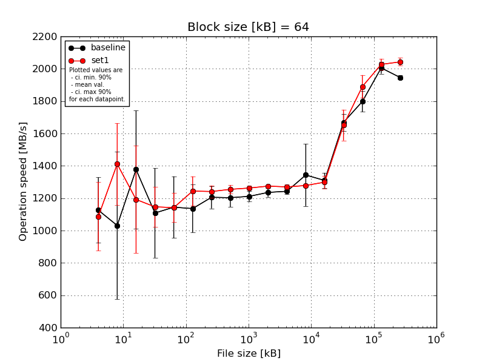
|
Block size [kB] |
File size [kB] |
| 64 |
128 |
256 |
512 |
1024 |
2048 |
4096 |
8192 |
16384 |
32768 |
65536 |
131072 |
262144 |
524288 |
1048576 |
2097152 |
4194304 |
| baseline | 64 | 1388.43 | 1665.43 | 1623.67 | 1592.61 | 1275.33 | 1387.74 | 1308.9 | 1291.36 | 1259.25 | 1274.44 | 1267.4 | 1272.08 | 1262.29 | 1601.15 | 1806.99 | 1987.6 | 1954.18 |
| 64 | 960.92 | 1225.53 | 1551.59 | 1123.39 | 1013.16 | 1052.15 | 1207.79 | 1199.19 | 1223.43 | 1259.29 | 1251.69 | 1257.59 | 1261.09 | 1714.08 | 1785.75 | 2021.21 | 1937.6 |
| 64 | 1325.26 | 570.62 | 1444.71 | 939.67 | 1428.67 | 1182.03 | 1190.48 | 1226.05 | 1211.49 | 1207.18 | 1229.92 | 1251.92 | 1343.76 | 1677.45 | 1741.47 | 2041.17 | 1968.08 |
| 64 | 960.92 | 1157.87 | 1563.16 | 1039.84 | 1048.1 | 1024.15 | 1104.94 | 1146.46 | 1196.26 | 1218.86 | 1227.16 | 1703.98 | 1373.73 | 1726.88 | 1747.3 | 1947.58 | 1936.84 |
| 64 | 993.7 | 536.74 | 702.42 | 846.03 | 956.12 | 1032.09 | 1214.7 | 1151.89 | 1166.08 | 1218.77 | 1237.24 | 1230.57 | 1306.12 | 1624.13 | 1906.8 | 2028.54 | 1934.45 |
| mean val. |
1125.85 |
1031.24 |
1377.11 |
1108.31 |
1144.28 |
1135.63 |
1205.36 |
1202.99 |
1211.3 |
1235.71 |
1242.68 |
1343.23 |
1309.4 |
1668.74 |
1797.66 |
2005.22 |
1946.23 |
| standard dev. |
212.48 |
477.67 |
382.63 |
290.12 |
199.94 |
154.78 |
72.66 |
59.5 |
34.34 |
29.33 |
16.78 |
202.22 |
49.71 |
54.93 |
66.77 |
37.83 |
14.51 |
| ci. min. 90% |
923.27 |
575.83 |
1012.31 |
831.7 |
953.66 |
988.06 |
1136.09 |
1146.26 |
1178.56 |
1207.74 |
1226.69 |
1150.43 |
1262.01 |
1616.36 |
1734.0 |
1969.15 |
1932.4 |
| ci. max 90% |
1328.42 |
1486.65 |
1741.91 |
1384.91 |
1334.89 |
1283.2 |
1274.64 |
1259.72 |
1244.04 |
1263.67 |
1258.67 |
1536.02 |
1356.79 |
1721.11 |
1861.32 |
2041.29 |
1960.06 |
| geom. mean |
1110.43 |
937.4 |
1319.26 |
1081.42 |
1130.91 |
1127.76 |
1203.61 |
1201.83 |
1210.91 |
1235.43 |
1242.59 |
1332.42 |
1308.65 |
1668.01 |
1796.69 |
2004.93 |
1946.19 |
| median |
993.7 |
1157.87 |
1551.59 |
1039.84 |
1048.1 |
1052.15 |
1207.79 |
1199.19 |
1211.49 |
1218.86 |
1237.24 |
1257.59 |
1306.12 |
1677.45 |
1785.75 |
2021.21 |
1937.6 |
| first quartile |
960.92 |
570.62 |
1444.71 |
939.67 |
1013.16 |
1032.09 |
1190.48 |
1151.89 |
1196.26 |
1218.77 |
1229.92 |
1251.92 |
1262.29 |
1624.13 |
1747.3 |
1987.6 |
1936.84 |
| third quartile |
1325.26 |
1225.53 |
1563.16 |
1123.39 |
1275.33 |
1182.03 |
1214.7 |
1226.05 |
1223.43 |
1259.29 |
1251.69 |
1272.08 |
1343.76 |
1714.08 |
1806.99 |
2028.54 |
1954.18 |
| minimum |
960.92 |
536.74 |
702.42 |
846.03 |
956.12 |
1024.15 |
1104.94 |
1146.46 |
1166.08 |
1207.18 |
1227.16 |
1230.57 |
1261.09 |
1601.15 |
1741.47 |
1947.58 |
1934.45 |
| maximum |
1388.43 |
1665.43 |
1623.67 |
1592.61 |
1428.67 |
1387.74 |
1308.9 |
1291.36 |
1259.25 |
1274.44 |
1267.4 |
1703.98 |
1373.73 |
1726.88 |
1906.8 |
2041.17 |
1968.08 |
| set1 | 64 | 993.7 | 1686.87 | 1479.36 | 1046.06 | 1127.56 | 1388.89 | 1300.78 | 1298.91 | 1285.64 | 1281.68 | 1279.84 | 1279.75 | 1282.15 | 1792.28 | 1969.28 | 2070.49 | 2024.01 |
| 64 | 1009.0 | 1214.17 | 1623.67 | 1234.49 | 1089.2 | 1177.21 | 1254.29 | 1263.83 | 1249.61 | 1271.81 | 1277.06 | 1272.01 | 1367.79 | 1612.92 | 1961.42 | 2045.99 | 2082.78 |
| 64 | 975.22 | 1214.17 | 1041.49 | 1225.83 | 1079.95 | 1142.27 | 1209.19 | 1245.9 | 1261.45 | 1280.4 | 1277.29 | 1278.57 | 1269.32 | 1632.78 | 1808.05 | 1995.26 | 2024.76 |
| 64 | 975.22 | 1714.45 | 778.56 | 1252.92 | 1102.37 | 1261.86 | 1233.82 | 1228.48 | 1256.98 | 1269.04 | 1270.42 | 1269.34 | 1302.41 | 1696.26 | 1829.62 | 2039.45 | 2053.29 |
| 64 | 1482.67 | 1225.53 | 1037.37 | 972.79 | 1309.16 | 1250.01 | 1207.36 | 1236.67 | 1259.55 | 1269.9 | 1244.31 | 1292.46 | 1273.84 | 1523.55 | 1883.89 | 1983.42 | 2027.96 |
| mean val. |
1087.16 |
1411.04 |
1192.09 |
1146.42 |
1141.65 |
1244.05 |
1241.09 |
1254.76 |
1262.65 |
1274.57 |
1269.79 |
1278.42 |
1299.1 |
1651.56 |
1890.45 |
2026.92 |
2042.56 |
| standard dev. |
221.55 |
264.6 |
348.71 |
128.08 |
95.34 |
95.07 |
38.56 |
27.96 |
13.62 |
6.01 |
14.66 |
8.98 |
40.44 |
100.04 |
73.79 |
36.45 |
25.53 |
| ci. min. 90% |
875.94 |
1158.77 |
859.63 |
1024.3 |
1050.75 |
1153.41 |
1204.33 |
1228.1 |
1249.67 |
1268.83 |
1255.81 |
1269.87 |
1260.55 |
1556.18 |
1820.1 |
1992.17 |
2018.22 |
| ci. max 90% |
1298.38 |
1663.31 |
1524.55 |
1268.53 |
1232.55 |
1334.69 |
1277.85 |
1281.42 |
1275.63 |
1280.3 |
1283.76 |
1286.98 |
1337.66 |
1746.94 |
1960.81 |
2061.67 |
2066.9 |
| geom. mean |
1071.71 |
1391.93 |
1151.04 |
1140.47 |
1138.66 |
1241.2 |
1240.61 |
1254.51 |
1262.59 |
1274.56 |
1269.72 |
1278.4 |
1298.61 |
1649.15 |
1889.3 |
2026.66 |
2042.43 |
| median |
993.7 |
1225.53 |
1041.49 |
1225.83 |
1102.37 |
1250.01 |
1233.82 |
1245.9 |
1259.55 |
1271.81 |
1277.06 |
1278.57 |
1282.15 |
1632.78 |
1883.89 |
2039.45 |
2027.96 |
| first quartile |
975.22 |
1214.17 |
1037.37 |
1046.06 |
1089.2 |
1177.21 |
1209.19 |
1236.67 |
1256.98 |
1269.9 |
1270.42 |
1272.01 |
1273.84 |
1612.92 |
1829.62 |
1995.26 |
2024.76 |
| third quartile |
1009.0 |
1686.87 |
1479.36 |
1234.49 |
1127.56 |
1261.86 |
1254.29 |
1263.83 |
1261.45 |
1280.4 |
1277.29 |
1279.75 |
1302.41 |
1696.26 |
1961.42 |
2045.99 |
2053.29 |
| minimum |
975.22 |
1214.17 |
778.56 |
972.79 |
1079.95 |
1142.27 |
1207.36 |
1228.48 |
1249.61 |
1269.04 |
1244.31 |
1269.34 |
1269.32 |
1523.55 |
1808.05 |
1983.42 |
2024.01 |
| maximum |
1482.67 |
1714.45 |
1623.67 |
1252.92 |
1309.16 |
1388.89 |
1300.78 |
1298.91 |
1285.64 |
1281.68 |
1279.84 |
1292.46 |
1367.79 |
1792.28 |
1969.28 |
2070.49 |
2082.78 |
| baseline set1 difference |
-3.44 % |
36.83 % |
-13.44 % |
3.44 % |
-0.23 % |
9.55 % |
2.96 % |
4.3 % |
4.24 % |
3.14 % |
2.18 % |
-4.82 % |
-0.79 % |
-1.03 % |
5.16 % |
1.08 % |
4.95 % |
| ttest p-value |
0.7852 |
0.1585 |
0.4473 |
0.795 |
0.9795 |
0.2187 |
0.3599 |
0.1163 |
0.0145 |
0.0198 |
0.0262 |
0.4944 |
0.7287 |
0.7451 |
0.0706 |
0.3827 |
0.0001 |
| ttest equality |
SAME |
SAME |
SAME |
SAME |
SAME |
SAME |
SAME |
SAME |
DIFF |
DIFF |
DIFF |
SAME |
SAME |
SAME |
DIFF |
SAME |
DIFF |
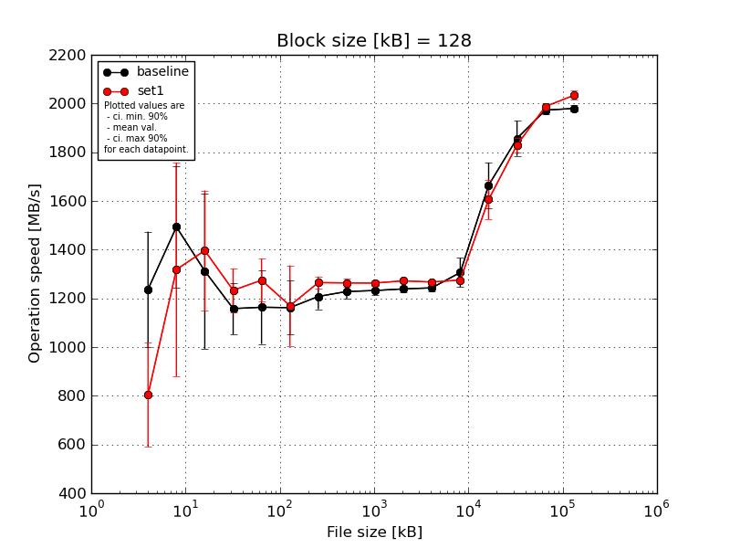
|
Block size [kB] |
File size [kB] |
| 128 |
256 |
512 |
1024 |
2048 |
4096 |
8192 |
16384 |
32768 |
65536 |
131072 |
262144 |
524288 |
1048576 |
2097152 |
4194304 |
| baseline | 128 | 1542.9 | 1811.62 | 1677.98 | 1303.47 | 1405.41 | 1312.38 | 1292.2 | 1275.81 | 1259.49 | 1258.01 | 1265.82 | 1274.01 | 1744.46 | 1772.62 | 1963.48 | 1992.89 |
| 128 | 1088.17 | 1294.85 | 880.12 | 1049.15 | 1029.3 | 1012.7 | 1182.92 | 1235.24 | 1240.27 | 1245.03 | 1247.77 | 1298.95 | 1713.37 | 1942.18 | 1992.8 | 1965.87 |
| 128 | 1469.39 | 1748.19 | 1623.43 | 1248.38 | 1226.98 | 1232.73 | 1229.6 | 1223.81 | 1214.56 | 1231.15 | 1235.81 | 1248.67 | 1684.76 | 1881.23 | 1956.08 | 1988.46 |
| 128 | 1068.22 | 1282.18 | 1208.17 | 1091.75 | 1028.8 | 1099.8 | 1147.79 | 1201.57 | 1219.1 | 1234.57 | 1241.15 | 1412.33 | 1684.09 | 1782.61 | 1987.64 | 1989.88 |
| 128 | 1016.44 | 1329.32 | 1171.07 | 1096.61 | 1127.38 | 1151.43 | 1186.77 | 1204.1 | 1227.42 | 1225.96 | 1224.63 | 1296.86 | 1495.59 | 1905.72 | 1964.12 | 1961.61 |
| mean val. |
1237.03 |
1493.23 |
1312.15 |
1157.87 |
1163.57 |
1161.81 |
1207.86 |
1228.11 |
1232.17 |
1238.94 |
1243.04 |
1306.16 |
1664.46 |
1856.87 |
1972.82 |
1979.74 |
| standard dev. |
248.43 |
263.22 |
334.7 |
111.06 |
158.12 |
116.07 |
55.37 |
30.11 |
18.14 |
12.74 |
15.3 |
62.75 |
97.6 |
75.61 |
16.29 |
14.77 |
| ci. min. 90% |
1000.18 |
1242.28 |
993.05 |
1051.99 |
1012.82 |
1051.15 |
1155.07 |
1199.4 |
1214.88 |
1226.8 |
1228.45 |
1246.34 |
1571.4 |
1784.79 |
1957.29 |
1965.66 |
| ci. max 90% |
1473.88 |
1744.18 |
1631.25 |
1263.75 |
1314.32 |
1272.47 |
1260.64 |
1256.81 |
1249.46 |
1251.09 |
1257.62 |
1365.99 |
1757.51 |
1928.96 |
1988.36 |
1993.82 |
| geom. mean |
1217.82 |
1475.34 |
1276.72 |
1153.7 |
1155.36 |
1157.15 |
1206.86 |
1227.81 |
1232.06 |
1238.89 |
1242.96 |
1304.99 |
1662.06 |
1855.64 |
1972.77 |
1979.7 |
| median |
1088.17 |
1329.32 |
1208.17 |
1096.61 |
1127.38 |
1151.43 |
1186.77 |
1223.81 |
1227.42 |
1234.57 |
1241.15 |
1296.86 |
1684.76 |
1881.23 |
1964.12 |
1988.46 |
| first quartile |
1068.22 |
1294.85 |
1171.07 |
1091.75 |
1029.3 |
1099.8 |
1182.92 |
1204.1 |
1219.1 |
1231.15 |
1235.81 |
1274.01 |
1684.09 |
1782.61 |
1963.48 |
1965.87 |
| third quartile |
1469.39 |
1748.19 |
1623.43 |
1248.38 |
1226.98 |
1232.73 |
1229.6 |
1235.24 |
1240.27 |
1245.03 |
1247.77 |
1298.95 |
1713.37 |
1905.72 |
1987.64 |
1989.88 |
| minimum |
1016.44 |
1282.18 |
880.12 |
1049.15 |
1028.8 |
1012.7 |
1147.79 |
1201.57 |
1214.56 |
1225.96 |
1224.63 |
1248.67 |
1495.59 |
1772.62 |
1956.08 |
1961.61 |
| maximum |
1542.9 |
1811.62 |
1677.98 |
1303.47 |
1405.41 |
1312.38 |
1292.2 |
1275.81 |
1259.49 |
1258.01 |
1265.82 |
1412.33 |
1744.46 |
1942.18 |
1992.8 |
1992.89 |
| set1 | 128 | 1059.58 | 1771.82 | 1046.06 | 1312.44 | 1406.35 | 1233.45 | 1296.4 | 1282.18 | 1276.13 | 1279.49 | 1274.57 | 1280.36 | 1599.29 | 1846.99 | 1991.6 | 2012.97 |
| 128 | 439.91 | 677.9 | 1302.74 | 1135.19 | 1327.14 | 1281.99 | 1231.18 | 1252.25 | 1247.37 | 1261.73 | 1254.76 | 1274.75 | 1660.88 | 1825.52 | 1989.14 | 2056.59 |
| 128 | 850.0 | 1762.89 | 1660.71 | 1246.89 | 1205.47 | 868.44 | 1246.69 | 1269.03 | 1270.39 | 1280.2 | 1270.18 | 1268.88 | 1498.99 | 1831.82 | 2008.42 | 2020.29 |
| 128 | 833.78 | 1183.75 | 1645.08 | 1138.89 | 1255.44 | 1283.76 | 1279.59 | 1239.64 | 1259.0 | 1268.51 | 1265.75 | 1273.54 | 1554.83 | 1781.01 | 1980.46 | 2052.98 |
| 128 | 839.12 | 1195.9 | 1326.63 | 1331.61 | 1179.2 | 1181.76 | 1269.66 | 1274.0 | 1261.93 | 1270.19 | 1269.92 | 1278.43 | 1715.31 | 1863.81 | 1967.92 | 2025.8 |
| mean val. |
804.48 |
1318.45 |
1396.24 |
1233.0 |
1274.72 |
1169.88 |
1264.7 |
1263.42 |
1262.96 |
1272.02 |
1267.03 |
1275.19 |
1605.86 |
1829.83 |
1987.51 |
2033.73 |
| standard dev. |
224.79 |
460.04 |
258.88 |
93.07 |
92.69 |
173.63 |
25.98 |
17.22 |
11.05 |
7.81 |
7.54 |
4.47 |
85.26 |
31.04 |
14.92 |
19.8 |
| ci. min. 90% |
590.17 |
879.86 |
1149.43 |
1144.27 |
1186.35 |
1004.35 |
1239.94 |
1247.0 |
1252.43 |
1264.57 |
1259.85 |
1270.93 |
1524.58 |
1800.24 |
1973.29 |
2014.85 |
| ci. max 90% |
1018.79 |
1757.05 |
1643.06 |
1321.74 |
1363.09 |
1335.42 |
1289.47 |
1279.83 |
1273.5 |
1279.48 |
1274.22 |
1279.45 |
1687.14 |
1859.43 |
2001.73 |
2052.6 |
| geom. mean |
773.68 |
1245.53 |
1376.35 |
1230.17 |
1272.07 |
1158.12 |
1264.49 |
1263.32 |
1262.92 |
1272.01 |
1267.02 |
1275.18 |
1604.05 |
1829.62 |
1987.46 |
2033.65 |
| median |
839.12 |
1195.9 |
1326.63 |
1246.89 |
1255.44 |
1233.45 |
1269.66 |
1269.03 |
1261.93 |
1270.19 |
1269.92 |
1274.75 |
1599.29 |
1831.82 |
1989.14 |
2025.8 |
| first quartile |
833.78 |
1183.75 |
1302.74 |
1138.89 |
1205.47 |
1181.76 |
1246.69 |
1252.25 |
1259.0 |
1268.51 |
1265.75 |
1273.54 |
1554.83 |
1825.52 |
1980.46 |
2020.29 |
| third quartile |
850.0 |
1762.89 |
1645.08 |
1312.44 |
1327.14 |
1281.99 |
1279.59 |
1274.0 |
1270.39 |
1279.49 |
1270.18 |
1278.43 |
1660.88 |
1846.99 |
1991.6 |
2052.98 |
| minimum |
439.91 |
677.9 |
1046.06 |
1135.19 |
1179.2 |
868.44 |
1231.18 |
1239.64 |
1247.37 |
1261.73 |
1254.76 |
1268.88 |
1498.99 |
1781.01 |
1967.92 |
2012.97 |
| maximum |
1059.58 |
1771.82 |
1660.71 |
1331.61 |
1406.35 |
1283.76 |
1296.4 |
1282.18 |
1276.13 |
1280.2 |
1274.57 |
1280.36 |
1715.31 |
1863.81 |
2008.42 |
2056.59 |
| baseline set1 difference |
-34.97 % |
-11.7 % |
6.41 % |
6.49 % |
9.55 % |
0.7 % |
4.71 % |
2.88 % |
2.5 % |
2.67 % |
1.93 % |
-2.37 % |
-3.52 % |
-1.46 % |
0.74 % |
2.73 % |
| ttest p-value |
0.0203 |
0.482 |
0.6685 |
0.2797 |
0.2121 |
0.9332 |
0.0713 |
0.0523 |
0.0118 |
0.0011 |
0.0137 |
0.3029 |
0.3416 |
0.4806 |
0.1755 |
0.0012 |
| ttest equality |
DIFF |
SAME |
SAME |
SAME |
SAME |
SAME |
DIFF |
DIFF |
DIFF |
DIFF |
DIFF |
SAME |
SAME |
SAME |
SAME |
DIFF |

|
Block size [kB] |
File size [kB] |
| 256 |
512 |
1024 |
2048 |
4096 |
8192 |
16384 |
32768 |
65536 |
131072 |
262144 |
524288 |
1048576 |
2097152 |
4194304 |
| baseline | 256 | 1664.92 | 1872.78 | 1382.98 | 1306.27 | 1322.73 | 1288.63 | 1267.93 | 1263.82 | 1264.45 | 1266.67 | 1263.11 | 1504.08 | 1911.65 | 2049.78 | 1981.56 |
| 256 | 682.75 | 1024.6 | 1179.23 | 1103.79 | 1239.56 | 1240.15 | 1255.29 | 1245.38 | 1250.91 | 1236.37 | 1256.68 | 1711.71 | 1814.86 | 1978.94 | 1972.58 |
| 256 | 1582.03 | 1151.77 | 1321.12 | 1242.24 | 1265.46 | 1251.34 | 1182.64 | 1247.66 | 1220.61 | 1239.2 | 1327.99 | 1639.54 | 1884.05 | 2022.04 | 1973.0 |
| 256 | 1121.7 | 1014.19 | 937.11 | 1100.03 | 1120.74 | 1199.58 | 1199.23 | 1225.91 | 1244.63 | 1704.25 | 1723.71 | 1698.18 | 1793.94 | 2009.45 | 1957.96 |
| 256 | 684.98 | 1457.56 | 1200.5 | 1276.26 | 1153.8 | 1203.19 | 1220.83 | 1218.49 | 1238.99 | 1218.08 | 1360.9 | 1737.5 | 1786.24 | 2045.64 | 1965.93 |
| mean val. |
1147.28 |
1304.18 |
1204.19 |
1205.72 |
1220.46 |
1236.58 |
1225.19 |
1240.25 |
1243.92 |
1332.92 |
1386.48 |
1658.2 |
1838.15 |
2021.17 |
1970.21 |
| standard dev. |
470.93 |
364.8 |
171.47 |
97.44 |
82.52 |
36.82 |
36.18 |
18.14 |
16.11 |
208.31 |
193.56 |
93.34 |
56.35 |
28.89 |
8.81 |
| ci. min. 90% |
698.29 |
956.38 |
1040.71 |
1112.82 |
1141.79 |
1201.47 |
1190.69 |
1222.96 |
1228.55 |
1134.32 |
1201.93 |
1569.21 |
1784.43 |
1993.63 |
1961.81 |
| ci. max 90% |
1596.26 |
1651.98 |
1367.67 |
1298.62 |
1299.13 |
1271.68 |
1259.68 |
1257.54 |
1259.28 |
1531.52 |
1571.02 |
1747.19 |
1891.87 |
2048.72 |
1978.61 |
| geom. mean |
1066.81 |
1267.16 |
1193.72 |
1202.52 |
1218.22 |
1236.14 |
1224.76 |
1240.15 |
1243.83 |
1321.4 |
1376.67 |
1656.02 |
1837.46 |
2021.01 |
1970.19 |
| median |
1121.7 |
1151.77 |
1200.5 |
1242.24 |
1239.56 |
1240.15 |
1220.83 |
1245.38 |
1244.63 |
1239.2 |
1327.99 |
1698.18 |
1814.86 |
2022.04 |
1972.58 |
| first quartile |
684.98 |
1024.6 |
1179.23 |
1103.79 |
1153.8 |
1203.19 |
1199.23 |
1225.91 |
1238.99 |
1236.37 |
1263.11 |
1639.54 |
1793.94 |
2009.45 |
1965.93 |
| third quartile |
1582.03 |
1457.56 |
1321.12 |
1276.26 |
1265.46 |
1251.34 |
1255.29 |
1247.66 |
1250.91 |
1266.67 |
1360.9 |
1711.71 |
1884.05 |
2045.64 |
1973.0 |
| minimum |
682.75 |
1014.19 |
937.11 |
1100.03 |
1120.74 |
1199.58 |
1182.64 |
1218.49 |
1220.61 |
1218.08 |
1256.68 |
1504.08 |
1786.24 |
1978.94 |
1957.96 |
| maximum |
1664.92 |
1872.78 |
1382.98 |
1306.27 |
1322.73 |
1288.63 |
1267.93 |
1263.82 |
1264.45 |
1704.25 |
1723.71 |
1737.5 |
1911.65 |
2049.78 |
1981.56 |
| set1 | 256 | 814.23 | 1199.19 | 1349.6 | 1431.79 | 1325.44 | 1301.68 | 1261.64 | 1274.3 | 1264.89 | 1278.15 | 1294.03 | 1675.27 | 1952.12 | 1969.93 | 2059.58 |
| 256 | 1678.24 | 1091.81 | 1228.27 | 1254.69 | 1281.99 | 1253.35 | 1261.73 | 1256.43 | 1272.65 | 1257.37 | 1290.52 | 1756.72 | 1833.09 | 2022.31 | 2058.45 |
| 256 | 1269.76 | 1103.88 | 1223.97 | 1243.71 | 2196.6 | 1282.03 | 1262.33 | 1282.57 | 1275.41 | 1275.4 | 1273.05 | 1504.53 | 1815.69 | 1990.32 | 2045.61 |
| 256 | 679.21 | 1561.77 | 1455.44 | 1252.25 | 1287.8 | 1283.7 | 1250.59 | 1287.83 | 1267.78 | 1275.98 | 1277.28 | 1707.55 | 1914.28 | 2065.59 | 2059.05 |
| 256 | 1421.21 | 1866.12 | 1535.92 | 1275.48 | 1289.88 | 1276.72 | 1268.03 | 1257.17 | 1263.33 | 1279.05 | 1269.77 | 1558.36 | 1862.8 | 2040.38 | 2048.26 |
| mean val. |
1172.53 |
1364.55 |
1358.64 |
1291.59 |
1476.34 |
1279.5 |
1260.86 |
1271.66 |
1268.81 |
1273.19 |
1280.93 |
1640.49 |
1875.59 |
2017.71 |
2054.19 |
| standard dev. |
417.96 |
339.17 |
137.85 |
79.24 |
403.0 |
17.38 |
6.33 |
14.4 |
5.12 |
8.97 |
10.77 |
105.41 |
56.81 |
38.28 |
6.7 |
| ci. min. 90% |
774.05 |
1041.19 |
1227.21 |
1216.04 |
1092.13 |
1262.93 |
1254.83 |
1257.93 |
1263.93 |
1264.64 |
1270.67 |
1539.99 |
1821.43 |
1981.21 |
2047.8 |
| ci. max 90% |
1571.02 |
1687.91 |
1490.07 |
1367.14 |
1860.56 |
1296.06 |
1266.9 |
1285.39 |
1273.69 |
1281.74 |
1291.19 |
1740.98 |
1929.76 |
2054.2 |
2060.58 |
| geom. mean |
1108.66 |
1333.22 |
1353.09 |
1289.74 |
1440.39 |
1279.4 |
1260.85 |
1271.59 |
1268.8 |
1273.16 |
1280.89 |
1637.74 |
1874.91 |
2017.42 |
2054.18 |
| median |
1269.76 |
1199.19 |
1349.6 |
1254.69 |
1289.88 |
1282.03 |
1261.73 |
1274.3 |
1267.78 |
1275.98 |
1277.28 |
1675.27 |
1862.8 |
2022.31 |
2058.45 |
| first quartile |
814.23 |
1103.88 |
1228.27 |
1252.25 |
1287.8 |
1276.72 |
1261.64 |
1257.17 |
1264.89 |
1275.4 |
1273.05 |
1558.36 |
1833.09 |
1990.32 |
2048.26 |
| third quartile |
1421.21 |
1561.77 |
1455.44 |
1275.48 |
1325.44 |
1283.7 |
1262.33 |
1282.57 |
1272.65 |
1278.15 |
1290.52 |
1707.55 |
1914.28 |
2040.38 |
2059.05 |
| minimum |
679.21 |
1091.81 |
1223.97 |
1243.71 |
1281.99 |
1253.35 |
1250.59 |
1256.43 |
1263.33 |
1257.37 |
1269.77 |
1504.53 |
1815.69 |
1969.93 |
2045.61 |
| maximum |
1678.24 |
1866.12 |
1535.92 |
1431.79 |
2196.6 |
1301.68 |
1268.03 |
1287.83 |
1275.41 |
1279.05 |
1294.03 |
1756.72 |
1952.12 |
2065.59 |
2059.58 |
| baseline set1 difference |
2.2 % |
4.63 % |
12.83 % |
7.12 % |
20.97 % |
3.47 % |
2.91 % |
2.53 % |
2.0 % |
-4.48 % |
-7.61 % |
-1.07 % |
2.04 % |
-0.17 % |
4.26 % |
| ttest p-value |
0.9307 |
0.7932 |
0.1551 |
0.1648 |
0.2017 |
0.0462 |
0.0616 |
0.0162 |
0.011 |
0.5397 |
0.2581 |
0.7856 |
0.3259 |
0.8757 |
0.0 |
| ttest equality |
SAME |
SAME |
SAME |
SAME |
SAME |
DIFF |
DIFF |
DIFF |
DIFF |
SAME |
SAME |
SAME |
SAME |
SAME |
DIFF |
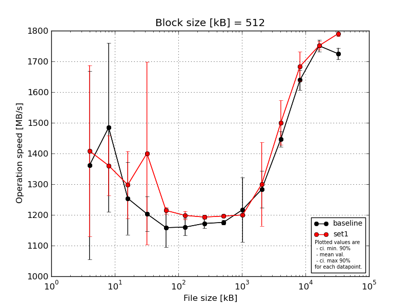
|
Block size [kB] |
File size [kB] |
| 512 |
1024 |
2048 |
4096 |
8192 |
16384 |
32768 |
65536 |
131072 |
262144 |
524288 |
1048576 |
2097152 |
4194304 |
| baseline | 512 | 1717.84 | 1815.08 | 1433.75 | 1283.27 | 1246.5 | 1204.46 | 1198.63 | 1186.26 | 1188.99 | 1194.89 | 1442.0 | 1600.25 | 1765.11 | 1759.16 |
| 512 | 1275.01 | 1113.79 | 1183.53 | 1174.4 | 1143.65 | 1159.85 | 1177.9 | 1178.1 | 1176.94 | 1238.63 | 1486.31 | 1683.55 | 1742.44 | 1710.61 |
| 512 | 1655.46 | 1712.1 | 1263.38 | 1248.04 | 1191.74 | 1167.72 | 1162.28 | 1173.69 | 1150.41 | 1324.34 | 1415.85 | 1610.21 | 1774.51 | 1710.96 |
| 512 | 1213.77 | 1298.62 | 1101.91 | 1164.53 | 1145.13 | 1137.33 | 1162.16 | 1173.32 | 1412.38 | 1332.9 | 1435.84 | 1641.8 | 1723.6 | 1720.83 |
| 512 | 946.88 | 1483.76 | 1286.83 | 1147.1 | 1065.7 | 1131.76 | 1159.92 | 1166.54 | 1156.75 | 1324.72 | 1456.08 | 1660.75 | 1749.32 | 1722.75 |
| mean val. |
1361.79 |
1484.67 |
1253.88 |
1203.47 |
1158.55 |
1160.23 |
1172.18 |
1175.58 |
1217.09 |
1283.1 |
1447.22 |
1639.31 |
1751.0 |
1724.86 |
| standard dev. |
321.95 |
288.56 |
124.07 |
58.94 |
66.82 |
28.93 |
16.44 |
7.26 |
110.26 |
62.59 |
26.2 |
34.62 |
19.87 |
19.96 |
| ci. min. 90% |
1054.85 |
1209.56 |
1135.59 |
1147.28 |
1094.84 |
1132.64 |
1156.51 |
1168.66 |
1111.97 |
1223.42 |
1422.23 |
1606.3 |
1732.06 |
1705.83 |
| ci. max 90% |
1668.74 |
1759.78 |
1372.17 |
1259.66 |
1222.25 |
1187.81 |
1187.85 |
1182.5 |
1322.21 |
1342.77 |
1472.2 |
1672.32 |
1769.94 |
1743.89 |
| geom. mean |
1330.36 |
1461.55 |
1249.02 |
1202.33 |
1157.0 |
1159.94 |
1172.09 |
1175.57 |
1213.37 |
1281.85 |
1447.03 |
1639.02 |
1750.91 |
1724.77 |
| median |
1275.01 |
1483.76 |
1263.38 |
1174.4 |
1145.13 |
1159.85 |
1162.28 |
1173.69 |
1176.94 |
1324.34 |
1442.0 |
1641.8 |
1749.32 |
1720.83 |
| first quartile |
1213.77 |
1298.62 |
1183.53 |
1164.53 |
1143.65 |
1137.33 |
1162.16 |
1173.32 |
1156.75 |
1238.63 |
1435.84 |
1610.21 |
1742.44 |
1710.96 |
| third quartile |
1655.46 |
1712.1 |
1286.83 |
1248.04 |
1191.74 |
1167.72 |
1177.9 |
1178.1 |
1188.99 |
1324.72 |
1456.08 |
1660.75 |
1765.11 |
1722.75 |
| minimum |
946.88 |
1113.79 |
1101.91 |
1147.1 |
1065.7 |
1131.76 |
1159.92 |
1166.54 |
1150.41 |
1194.89 |
1415.85 |
1600.25 |
1723.6 |
1710.61 |
| maximum |
1717.84 |
1815.08 |
1433.75 |
1283.27 |
1246.5 |
1204.46 |
1198.63 |
1186.26 |
1412.38 |
1332.9 |
1486.31 |
1683.55 |
1774.51 |
1759.16 |
| set1 | 512 | 1101.56 | 1466.13 | 1432.53 | 1284.94 | 1216.94 | 1213.68 | 1195.01 | 1192.41 | 1197.1 | 1389.91 | 1431.29 | 1724.48 | 1743.1 | 1781.34 |
| 512 | 1534.34 | 1193.32 | 1264.33 | 1215.05 | 1232.31 | 1203.47 | 1191.81 | 1196.29 | 1198.21 | 1509.0 | 1493.09 | 1614.83 | 1740.39 | 1781.37 |
| 512 | 1084.47 | 1356.59 | 1258.64 | 1956.11 | 1200.83 | 1199.77 | 1199.98 | 1204.55 | 1208.07 | 1199.47 | 1576.0 | 1730.46 | 1771.29 | 1795.48 |
| 512 | 1671.3 | 1388.93 | 1145.39 | 1267.47 | 1209.92 | 1173.97 | 1181.68 | 1195.03 | 1202.58 | 1204.03 | 1423.15 | 1698.14 | 1740.98 | 1790.89 |
| 512 | 1650.25 | 1398.66 | 1389.81 | 1277.89 | 1211.97 | 1200.48 | 1196.27 | 1192.47 | 1193.31 | 1197.96 | 1580.03 | 1650.1 | 1760.53 | 1802.93 |
| mean val. |
1408.38 |
1360.73 |
1298.14 |
1400.29 |
1214.39 |
1198.27 |
1192.95 |
1196.15 |
1199.85 |
1300.08 |
1500.71 |
1683.6 |
1751.26 |
1790.4 |
| standard dev. |
292.64 |
101.72 |
114.56 |
311.92 |
11.59 |
14.68 |
6.95 |
4.98 |
5.66 |
142.74 |
75.59 |
49.82 |
13.94 |
9.31 |
| ci. min. 90% |
1129.38 |
1263.75 |
1188.92 |
1102.91 |
1203.34 |
1184.28 |
1186.33 |
1191.4 |
1194.46 |
1163.99 |
1428.65 |
1636.1 |
1737.97 |
1781.53 |
| ci. max 90% |
1687.38 |
1457.7 |
1407.36 |
1697.68 |
1225.45 |
1212.27 |
1199.57 |
1200.9 |
1205.25 |
1436.16 |
1572.78 |
1731.1 |
1764.55 |
1799.28 |
| geom. mean |
1382.77 |
1357.54 |
1294.06 |
1376.77 |
1214.35 |
1198.2 |
1192.93 |
1196.14 |
1199.84 |
1294.05 |
1499.19 |
1683.01 |
1751.21 |
1790.38 |
| median |
1534.34 |
1388.93 |
1264.33 |
1277.89 |
1211.97 |
1200.48 |
1195.01 |
1195.03 |
1198.21 |
1204.03 |
1493.09 |
1698.14 |
1743.1 |
1790.89 |
| first quartile |
1101.56 |
1356.59 |
1258.64 |
1267.47 |
1209.92 |
1199.77 |
1191.81 |
1192.47 |
1197.1 |
1199.47 |
1431.29 |
1650.1 |
1740.98 |
1781.37 |
| third quartile |
1650.25 |
1398.66 |
1389.81 |
1284.94 |
1216.94 |
1203.47 |
1196.27 |
1196.29 |
1202.58 |
1389.91 |
1576.0 |
1724.48 |
1760.53 |
1795.48 |
| minimum |
1084.47 |
1193.32 |
1145.39 |
1215.05 |
1200.83 |
1173.97 |
1181.68 |
1192.41 |
1193.31 |
1197.96 |
1423.15 |
1614.83 |
1740.39 |
1781.34 |
| maximum |
1671.3 |
1466.13 |
1432.53 |
1956.11 |
1232.31 |
1213.68 |
1199.98 |
1204.55 |
1208.07 |
1509.0 |
1580.03 |
1730.46 |
1771.29 |
1802.93 |
| baseline set1 difference |
3.42 % |
-8.35 % |
3.53 % |
16.35 % |
4.82 % |
3.28 % |
1.77 % |
1.75 % |
-1.42 % |
1.32 % |
3.7 % |
2.7 % |
0.02 % |
3.8 % |
| ttest p-value |
0.8168 |
0.3915 |
0.574 |
0.203 |
0.1028 |
0.0305 |
0.0315 |
0.0008 |
0.736 |
0.8137 |
0.1732 |
0.1412 |
0.9813 |
0.0002 |
| ttest equality |
SAME |
SAME |
SAME |
SAME |
SAME |
DIFF |
DIFF |
DIFF |
SAME |
SAME |
SAME |
SAME |
SAME |
DIFF |
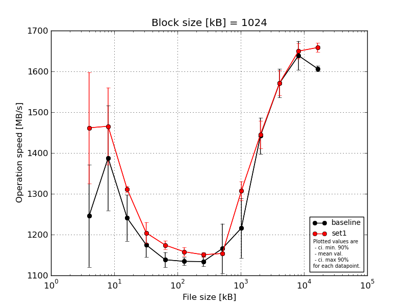
|
Block size [kB] |
File size [kB] |
| 1024 |
2048 |
4096 |
8192 |
16384 |
32768 |
65536 |
131072 |
262144 |
524288 |
1048576 |
2097152 |
4194304 |
| baseline | 1024 | 1369.88 | 1595.15 | 1327.96 | 1228.66 | 1164.56 | 1147.61 | 1150.17 | 1153.08 | 1158.83 | 1496.23 | 1601.04 | 1619.35 | 1612.96 |
| 1024 | 1337.13 | 1236.93 | 1221.78 | 1154.71 | 1135.56 | 1140.05 | 1143.14 | 1141.56 | 1264.9 | 1475.73 | 1588.16 | 1703.81 | 1608.95 |
| 1024 | 1310.39 | 1409.42 | 1261.84 | 1179.42 | 1130.5 | 1123.95 | 1127.63 | 1125.22 | 1198.59 | 1443.95 | 1587.07 | 1618.14 | 1600.47 |
| 1024 | 1136.11 | 1391.65 | 1223.92 | 1160.1 | 1148.36 | 1135.4 | 1130.44 | 1278.64 | 1322.01 | 1380.2 | 1507.83 | 1636.96 | 1614.02 |
| 1024 | 1075.24 | 1306.27 | 1167.94 | 1151.89 | 1112.97 | 1125.13 | 1118.63 | 1130.52 | 1135.92 | 1413.36 | 1570.51 | 1615.53 | 1597.67 |
| mean val. |
1245.75 |
1387.88 |
1240.69 |
1174.96 |
1138.39 |
1134.43 |
1134.0 |
1165.8 |
1216.05 |
1441.89 |
1570.92 |
1638.76 |
1606.81 |
| standard dev. |
131.37 |
134.99 |
59.15 |
31.89 |
19.37 |
10.03 |
12.59 |
63.98 |
76.84 |
46.7 |
36.9 |
37.34 |
7.38 |
| ci. min. 90% |
1120.5 |
1259.19 |
1184.29 |
1144.56 |
1119.93 |
1124.86 |
1121.99 |
1104.8 |
1142.79 |
1397.38 |
1535.74 |
1603.16 |
1599.77 |
| ci. max 90% |
1370.99 |
1516.58 |
1297.08 |
1205.35 |
1156.86 |
1143.99 |
1146.01 |
1226.8 |
1289.31 |
1486.41 |
1606.1 |
1674.35 |
1613.85 |
| geom. mean |
1240.04 |
1382.77 |
1239.57 |
1174.62 |
1138.26 |
1134.39 |
1133.95 |
1164.46 |
1214.13 |
1441.29 |
1570.57 |
1638.42 |
1606.8 |
| median |
1310.39 |
1391.65 |
1223.92 |
1160.1 |
1135.56 |
1135.4 |
1130.44 |
1141.56 |
1198.59 |
1443.95 |
1587.07 |
1619.35 |
1608.95 |
| first quartile |
1136.11 |
1306.27 |
1221.78 |
1154.71 |
1130.5 |
1125.13 |
1127.63 |
1130.52 |
1158.83 |
1413.36 |
1570.51 |
1618.14 |
1600.47 |
| third quartile |
1337.13 |
1409.42 |
1261.84 |
1179.42 |
1148.36 |
1140.05 |
1143.14 |
1153.08 |
1264.9 |
1475.73 |
1588.16 |
1636.96 |
1612.96 |
| minimum |
1075.24 |
1236.93 |
1167.94 |
1151.89 |
1112.97 |
1123.95 |
1118.63 |
1125.22 |
1135.92 |
1380.2 |
1507.83 |
1615.53 |
1597.67 |
| maximum |
1369.88 |
1595.15 |
1327.96 |
1228.66 |
1164.56 |
1147.61 |
1150.17 |
1278.64 |
1322.01 |
1496.23 |
1601.04 |
1703.81 |
1614.02 |
| set1 | 1024 | 1416.61 | 1606.46 | 1324.5 | 1224.94 | 1168.31 | 1160.1 | 1149.49 | 1151.08 | 1279.38 | 1472.4 | 1622.27 | 1642.81 | 1646.38 |
| 1024 | 1335.0 | 1535.02 | 1308.9 | 1198.34 | 1171.04 | 1151.86 | 1147.24 | 1150.05 | 1285.41 | 1439.68 | 1548.84 | 1622.54 | 1654.2 |
| 1024 | 1592.49 | 1403.53 | 1306.35 | 1225.7 | 1185.69 | 1175.43 | 1158.56 | 1156.25 | 1309.96 | 1401.23 | 1578.54 | 1644.98 | 1650.14 |
| 1024 | 1633.42 | 1387.05 | 1311.97 | 1159.78 | 1185.02 | 1145.52 | 1155.13 | 1153.65 | 1333.55 | 1489.22 | 1566.89 | 1669.42 | 1669.37 |
| 1024 | 1331.18 | 1395.82 | 1305.54 | 1212.85 | 1161.6 | 1156.86 | 1143.33 | 1157.83 | 1327.99 | 1422.66 | 1540.57 | 1668.85 | 1672.28 |
| mean val. |
1461.74 |
1465.58 |
1311.45 |
1204.32 |
1174.33 |
1157.95 |
1150.75 |
1153.77 |
1307.26 |
1445.04 |
1571.42 |
1649.72 |
1658.47 |
| standard dev. |
142.93 |
99.44 |
7.72 |
27.27 |
10.64 |
11.22 |
6.11 |
3.31 |
24.4 |
35.88 |
32.09 |
19.77 |
11.65 |
| ci. min. 90% |
1325.47 |
1370.77 |
1304.1 |
1178.32 |
1164.19 |
1147.26 |
1144.93 |
1150.62 |
1283.99 |
1410.83 |
1540.83 |
1630.87 |
1647.36 |
| ci. max 90% |
1598.01 |
1560.38 |
1318.81 |
1230.32 |
1184.48 |
1168.65 |
1156.57 |
1156.93 |
1330.53 |
1479.24 |
1602.02 |
1668.57 |
1669.58 |
| geom. mean |
1456.22 |
1462.94 |
1311.43 |
1204.07 |
1174.3 |
1157.91 |
1150.74 |
1153.77 |
1307.08 |
1444.68 |
1571.16 |
1649.63 |
1658.44 |
| median |
1416.61 |
1403.53 |
1308.9 |
1212.85 |
1171.04 |
1156.86 |
1149.49 |
1153.65 |
1309.96 |
1439.68 |
1566.89 |
1644.98 |
1654.2 |
| first quartile |
1335.0 |
1395.82 |
1306.35 |
1198.34 |
1168.31 |
1151.86 |
1147.24 |
1151.08 |
1285.41 |
1422.66 |
1548.84 |
1642.81 |
1650.14 |
| third quartile |
1592.49 |
1535.02 |
1311.97 |
1224.94 |
1185.02 |
1160.1 |
1155.13 |
1156.25 |
1327.99 |
1472.4 |
1578.54 |
1668.85 |
1669.37 |
| minimum |
1331.18 |
1387.05 |
1305.54 |
1159.78 |
1161.6 |
1145.52 |
1143.33 |
1150.05 |
1279.38 |
1401.23 |
1540.57 |
1622.54 |
1646.38 |
| maximum |
1633.42 |
1606.46 |
1324.5 |
1225.7 |
1185.69 |
1175.43 |
1158.56 |
1157.83 |
1333.55 |
1489.22 |
1622.27 |
1669.42 |
1672.28 |
| baseline set1 difference |
17.34 % |
5.6 % |
5.7 % |
2.5 % |
3.16 % |
2.07 % |
1.48 % |
-1.03 % |
7.5 % |
0.22 % |
0.03 % |
0.67 % |
3.22 % |
| ttest p-value |
0.0376 |
0.3304 |
0.0291 |
0.1562 |
0.0066 |
0.0081 |
0.0281 |
0.6856 |
0.0353 |
0.9079 |
0.9823 |
0.5777 |
0.0 |
| ttest equality |
DIFF |
SAME |
DIFF |
SAME |
DIFF |
DIFF |
DIFF |
SAME |
DIFF |
SAME |
SAME |
SAME |
DIFF |
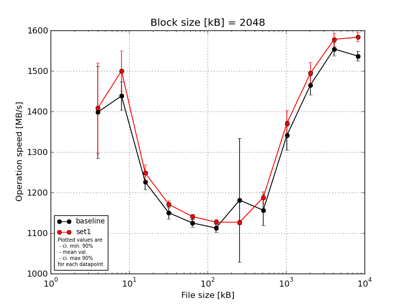
|
Block size [kB] |
File size [kB] |
| 2048 |
4096 |
8192 |
16384 |
32768 |
65536 |
131072 |
262144 |
524288 |
1048576 |
2097152 |
4194304 |
| baseline | 2048 | 1517.25 | 1485.39 | 1239.73 | 1167.38 | 1140.9 | 1129.48 | 1123.91 | 1125.96 | 1345.78 | 1476.83 | 1568.38 | 1553.21 |
| 2048 | 1410.37 | 1399.17 | 1220.83 | 1159.41 | 1119.35 | 1112.04 | 1108.86 | 1183.16 | 1356.78 | 1441.02 | 1557.78 | 1528.26 |
| 2048 | 1472.77 | 1446.58 | 1242.4 | 1151.42 | 1116.89 | 1110.44 | 1105.33 | 1188.18 | 1300.62 | 1483.39 | 1542.94 | 1520.24 |
| 2048 | 1384.07 | 1457.14 | 1235.54 | 1125.9 | 1127.2 | 1104.27 | 1467.94 | 1183.27 | 1308.25 | 1489.87 | 1571.24 | 1538.25 |
| 2048 | 1207.72 | 1403.5 | 1193.52 | 1147.18 | 1120.06 | 1106.0 | 1100.38 | 1101.26 | 1392.59 | 1436.37 | 1530.71 | 1543.93 |
| mean val. |
1398.44 |
1438.36 |
1226.4 |
1150.26 |
1124.88 |
1112.45 |
1181.28 |
1156.37 |
1340.8 |
1465.49 |
1554.21 |
1536.78 |
| standard dev. |
118.71 |
36.68 |
20.18 |
15.66 |
9.74 |
10.04 |
160.49 |
40.05 |
37.54 |
24.95 |
17.2 |
12.94 |
| ci. min. 90% |
1285.27 |
1403.38 |
1207.16 |
1135.32 |
1115.59 |
1102.88 |
1028.28 |
1118.19 |
1305.02 |
1441.71 |
1537.81 |
1524.45 |
| ci. max 90% |
1511.61 |
1473.33 |
1245.65 |
1165.19 |
1134.17 |
1122.01 |
1334.29 |
1194.55 |
1376.59 |
1489.28 |
1570.6 |
1549.11 |
| geom. mean |
1394.22 |
1437.98 |
1226.27 |
1150.17 |
1124.85 |
1112.41 |
1173.46 |
1155.81 |
1340.39 |
1465.32 |
1554.13 |
1536.74 |
| median |
1410.37 |
1446.58 |
1235.54 |
1151.42 |
1120.06 |
1110.44 |
1108.86 |
1183.16 |
1345.78 |
1476.83 |
1557.78 |
1538.25 |
| first quartile |
1384.07 |
1403.5 |
1220.83 |
1147.18 |
1119.35 |
1106.0 |
1105.33 |
1125.96 |
1308.25 |
1441.02 |
1542.94 |
1528.26 |
| third quartile |
1472.77 |
1457.14 |
1239.73 |
1159.41 |
1127.2 |
1112.04 |
1123.91 |
1183.27 |
1356.78 |
1483.39 |
1568.38 |
1543.93 |
| minimum |
1207.72 |
1399.17 |
1193.52 |
1125.9 |
1116.89 |
1104.27 |
1100.38 |
1101.26 |
1300.62 |
1436.37 |
1530.71 |
1520.24 |
| maximum |
1517.25 |
1485.39 |
1242.4 |
1167.38 |
1140.9 |
1129.48 |
1467.94 |
1188.18 |
1392.59 |
1489.87 |
1571.24 |
1553.21 |
| set1 | 2048 | 1365.15 | 1502.69 | 1272.07 | 1182.56 | 1138.31 | 1129.58 | 1127.25 | 1187.19 | 1365.19 | 1542.19 | 1602.32 | 1576.08 |
| 2048 | 1510.42 | 1489.74 | 1233.63 | 1175.62 | 1138.98 | 1123.97 | 1127.73 | 1204.37 | 1356.64 | 1495.25 | 1562.27 | 1579.69 |
| 2048 | 1545.49 | 1473.78 | 1232.86 | 1171.39 | 1150.33 | 1135.6 | 1134.79 | 1166.42 | 1414.78 | 1481.87 | 1561.32 | 1596.59 |
| 2048 | 1355.01 | 1448.83 | 1233.45 | 1157.07 | 1137.94 | 1129.54 | 1118.88 | 1199.73 | 1326.2 | 1472.21 | 1579.69 | 1594.79 |
| 2048 | 1265.86 | 1585.93 | 1270.48 | 1168.9 | 1137.66 | 1116.37 | 1124.95 | 1181.46 | 1390.28 | 1481.41 | 1584.04 | 1569.31 |
| mean val. |
1408.39 |
1500.19 |
1248.5 |
1171.11 |
1140.64 |
1127.01 |
1126.72 |
1187.83 |
1370.62 |
1494.59 |
1577.93 |
1583.29 |
| standard dev. |
116.45 |
51.96 |
20.8 |
9.4 |
5.44 |
7.23 |
5.72 |
15.12 |
33.67 |
27.85 |
17.0 |
11.93 |
| ci. min. 90% |
1297.37 |
1450.65 |
1228.66 |
1162.15 |
1135.46 |
1120.11 |
1121.26 |
1173.42 |
1338.52 |
1468.03 |
1561.72 |
1571.91 |
| ci. max 90% |
1519.41 |
1549.74 |
1268.33 |
1180.07 |
1145.83 |
1133.91 |
1132.18 |
1202.25 |
1402.72 |
1521.14 |
1594.14 |
1594.67 |
| geom. mean |
1404.54 |
1499.49 |
1248.36 |
1171.08 |
1140.63 |
1126.99 |
1126.71 |
1187.76 |
1370.29 |
1494.38 |
1577.86 |
1583.25 |
| median |
1365.15 |
1489.74 |
1233.63 |
1171.39 |
1138.31 |
1129.54 |
1127.25 |
1187.19 |
1365.19 |
1481.87 |
1579.69 |
1579.69 |
| first quartile |
1355.01 |
1473.78 |
1233.45 |
1168.9 |
1137.94 |
1123.97 |
1124.95 |
1181.46 |
1356.64 |
1481.41 |
1562.27 |
1576.08 |
| third quartile |
1510.42 |
1502.69 |
1270.48 |
1175.62 |
1138.98 |
1129.58 |
1127.73 |
1199.73 |
1390.28 |
1495.25 |
1584.04 |
1594.79 |
| minimum |
1265.86 |
1448.83 |
1232.86 |
1157.07 |
1137.66 |
1116.37 |
1118.88 |
1166.42 |
1326.2 |
1472.21 |
1561.32 |
1569.31 |
| maximum |
1545.49 |
1585.93 |
1272.07 |
1182.56 |
1150.33 |
1135.6 |
1134.79 |
1204.37 |
1414.78 |
1542.19 |
1602.32 |
1596.59 |
| baseline set1 difference |
0.71 % |
4.3 % |
1.8 % |
1.81 % |
1.4 % |
1.31 % |
-4.62 % |
2.72 % |
2.22 % |
1.99 % |
1.53 % |
3.03 % |
| ttest p-value |
0.8969 |
0.0615 |
0.1267 |
0.034 |
0.0134 |
0.0301 |
0.4692 |
0.1389 |
0.2227 |
0.1201 |
0.0596 |
0.0004 |
| ttest equality |
SAME |
DIFF |
SAME |
DIFF |
DIFF |
DIFF |
SAME |
SAME |
SAME |
SAME |
DIFF |
DIFF |
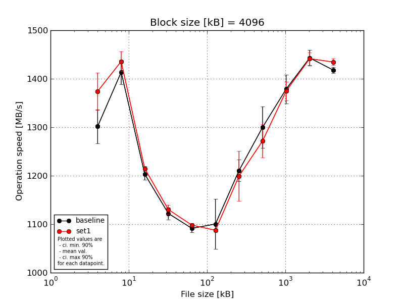
|
Block size [kB] |
File size [kB] |
| 4096 |
8192 |
16384 |
32768 |
65536 |
131072 |
262144 |
524288 |
1048576 |
2097152 |
4194304 |
| baseline | 4096 | 1350.41 | 1436.48 | 1222.94 | 1142.61 | 1103.52 | 1080.68 | 1183.0 | 1336.16 | 1413.36 | 1452.48 | 1408.84 |
| 4096 | 1246.47 | 1391.1 | 1201.75 | 1119.58 | 1097.06 | 1083.16 | 1228.59 | 1278.41 | 1358.73 | 1454.52 | 1413.58 |
| 4096 | 1305.84 | 1419.94 | 1190.49 | 1116.31 | 1082.67 | 1077.61 | 1230.93 | 1339.55 | 1358.39 | 1424.03 | 1422.8 |
| 4096 | 1303.81 | 1381.42 | 1203.64 | 1125.29 | 1083.37 | 1196.15 | 1187.39 | 1312.32 | 1351.17 | 1426.2 | 1422.67 |
| 4096 | 1301.69 | 1439.87 | 1197.44 | 1107.54 | 1090.58 | 1064.87 | 1223.5 | 1233.54 | 1412.04 | 1458.29 | 1422.01 |
| mean val. |
1301.64 |
1413.76 |
1203.25 |
1122.27 |
1091.44 |
1100.49 |
1210.68 |
1300.0 |
1378.74 |
1443.1 |
1417.98 |
| standard dev. |
36.89 |
26.44 |
12.11 |
13.06 |
8.95 |
53.94 |
23.47 |
44.46 |
31.15 |
16.57 |
6.41 |
| ci. min. 90% |
1266.47 |
1388.56 |
1191.7 |
1109.81 |
1082.91 |
1049.07 |
1188.31 |
1257.61 |
1349.04 |
1427.3 |
1411.87 |
| ci. max 90% |
1336.82 |
1438.97 |
1214.8 |
1134.72 |
1099.97 |
1151.91 |
1233.06 |
1342.39 |
1408.44 |
1458.9 |
1424.09 |
| geom. mean |
1301.22 |
1413.56 |
1203.2 |
1122.2 |
1091.41 |
1099.48 |
1210.5 |
1299.38 |
1378.46 |
1443.03 |
1417.97 |
| median |
1303.81 |
1419.94 |
1201.75 |
1119.58 |
1090.58 |
1080.68 |
1223.5 |
1312.32 |
1358.73 |
1452.48 |
1422.01 |
| first quartile |
1301.69 |
1391.1 |
1197.44 |
1116.31 |
1083.37 |
1077.61 |
1187.39 |
1278.41 |
1358.39 |
1426.2 |
1413.58 |
| third quartile |
1305.84 |
1436.48 |
1203.64 |
1125.29 |
1097.06 |
1083.16 |
1228.59 |
1336.16 |
1412.04 |
1454.52 |
1422.67 |
| minimum |
1246.47 |
1381.42 |
1190.49 |
1107.54 |
1082.67 |
1064.87 |
1183.0 |
1233.54 |
1351.17 |
1424.03 |
1408.84 |
| maximum |
1350.41 |
1439.87 |
1222.94 |
1142.61 |
1103.52 |
1196.15 |
1230.93 |
1339.55 |
1413.36 |
1458.29 |
1422.8 |
| set1 | 4096 | 1419.05 | 1440.12 | 1217.66 | 1125.38 | 1100.73 | 1089.06 | 1220.03 | 1323.68 | 1377.91 | 1423.64 | 1427.35 |
| 4096 | 1347.7 | 1420.73 | 1217.29 | 1130.23 | 1097.88 | 1084.12 | 1170.17 | 1296.95 | 1356.54 | 1432.78 | 1442.22 |
| 4096 | 1336.85 | 1453.47 | 1215.44 | 1145.56 | 1099.79 | 1092.63 | 1235.9 | 1246.71 | 1398.42 | 1441.8 | 1429.48 |
| 4096 | 1417.02 | 1406.96 | 1205.35 | 1118.03 | 1091.42 | 1083.62 | 1251.24 | 1244.27 | 1351.38 | 1455.93 | 1442.21 |
| 4096 | 1349.97 | 1457.76 | 1218.19 | 1132.78 | 1100.79 | 1088.18 | 1119.12 | 1247.56 | 1388.81 | 1453.71 | 1431.56 |
| mean val. |
1374.12 |
1435.81 |
1214.79 |
1130.39 |
1098.12 |
1087.52 |
1199.29 |
1271.83 |
1374.61 |
1441.57 |
1434.57 |
| standard dev. |
40.4 |
21.63 |
5.38 |
10.17 |
3.93 |
3.73 |
54.18 |
36.4 |
20.28 |
13.71 |
7.14 |
| ci. min. 90% |
1335.6 |
1415.18 |
1209.66 |
1120.7 |
1094.38 |
1083.96 |
1147.63 |
1237.13 |
1355.28 |
1428.5 |
1427.76 |
| ci. max 90% |
1412.64 |
1456.43 |
1219.91 |
1140.09 |
1101.87 |
1091.08 |
1250.95 |
1306.53 |
1393.95 |
1454.65 |
1441.37 |
| geom. mean |
1373.65 |
1435.68 |
1214.78 |
1130.36 |
1098.12 |
1087.52 |
1198.3 |
1271.42 |
1374.49 |
1441.52 |
1434.55 |
| median |
1349.97 |
1440.12 |
1217.29 |
1130.23 |
1099.79 |
1088.18 |
1220.03 |
1247.56 |
1377.91 |
1441.8 |
1431.56 |
| first quartile |
1347.7 |
1420.73 |
1215.44 |
1125.38 |
1097.88 |
1084.12 |
1170.17 |
1246.71 |
1356.54 |
1432.78 |
1429.48 |
| third quartile |
1417.02 |
1453.47 |
1217.66 |
1132.78 |
1100.73 |
1089.06 |
1235.9 |
1296.95 |
1388.81 |
1453.71 |
1442.21 |
| minimum |
1336.85 |
1406.96 |
1205.35 |
1118.03 |
1091.42 |
1083.62 |
1119.12 |
1244.27 |
1351.38 |
1423.64 |
1427.35 |
| maximum |
1419.05 |
1457.76 |
1218.19 |
1145.56 |
1100.79 |
1092.63 |
1251.24 |
1323.68 |
1398.42 |
1455.93 |
1442.22 |
| baseline set1 difference |
5.57 % |
1.56 % |
0.96 % |
0.72 % |
0.61 % |
-1.18 % |
-0.94 % |
-2.17 % |
-0.3 % |
-0.11 % |
1.17 % |
| ttest p-value |
0.0181 |
0.187 |
0.0875 |
0.3042 |
0.1648 |
0.6063 |
0.6776 |
0.305 |
0.8103 |
0.8777 |
0.0048 |
| ttest equality |
DIFF |
SAME |
DIFF |
SAME |
SAME |
SAME |
SAME |
SAME |
SAME |
SAME |
DIFF |
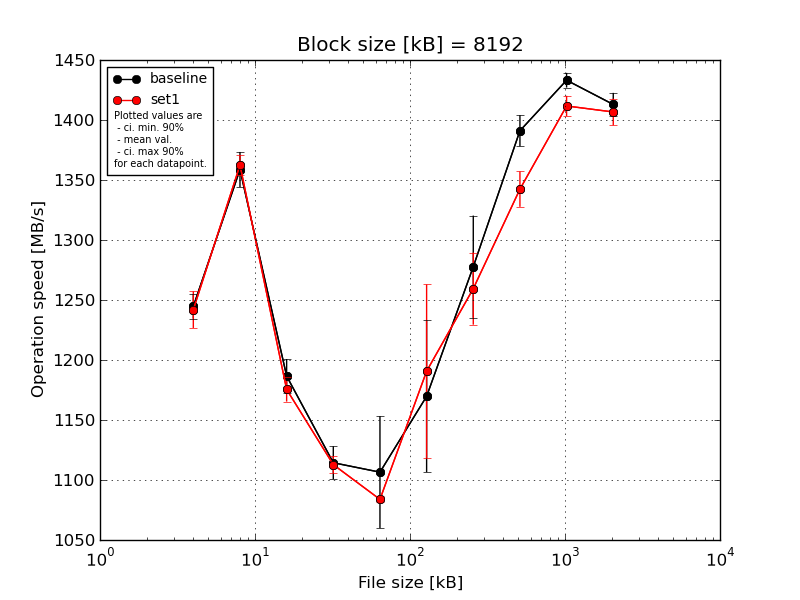
|
Block size [kB] |
File size [kB] |
| 8192 |
16384 |
32768 |
65536 |
131072 |
262144 |
524288 |
1048576 |
2097152 |
4194304 |
| baseline | 8192 | 1247.29 | 1385.29 | 1208.88 | 1134.11 | 1101.45 | 1251.37 | 1342.0 | 1405.41 | 1434.77 | 1411.46 |
| 8192 | 1250.59 | 1358.48 | 1180.2 | 1111.81 | 1084.96 | 1163.37 | 1307.5 | 1390.91 | 1425.16 | 1399.21 |
| 8192 | 1245.12 | 1349.77 | 1185.67 | 1109.59 | 1077.87 | 1067.56 | 1248.06 | 1394.06 | 1441.22 | 1426.06 |
| 8192 | 1226.64 | 1351.7 | 1190.09 | 1095.25 | 1192.28 | 1189.38 | 1248.79 | 1368.63 | 1436.33 | 1409.3 |
| 8192 | 1253.72 | 1348.17 | 1168.14 | 1121.21 | 1076.04 | 1176.87 | 1242.42 | 1396.21 | 1428.26 | 1418.74 |
| mean val. |
1244.67 |
1358.68 |
1186.59 |
1114.39 |
1106.52 |
1169.71 |
1277.75 |
1391.04 |
1433.15 |
1412.95 |
| standard dev. |
10.6 |
15.39 |
14.93 |
14.42 |
48.98 |
66.3 |
44.67 |
13.64 |
6.43 |
10.12 |
| ci. min. 90% |
1234.57 |
1344.01 |
1172.36 |
1100.65 |
1059.82 |
1106.5 |
1235.16 |
1378.04 |
1427.01 |
1403.31 |
| ci. max 90% |
1254.78 |
1373.35 |
1200.82 |
1128.14 |
1153.22 |
1232.92 |
1320.34 |
1404.05 |
1439.28 |
1422.6 |
| geom. mean |
1244.64 |
1358.61 |
1186.52 |
1114.32 |
1105.68 |
1168.18 |
1277.14 |
1390.99 |
1433.14 |
1412.93 |
| median |
1247.29 |
1351.7 |
1185.67 |
1111.81 |
1084.96 |
1176.87 |
1248.79 |
1394.06 |
1434.77 |
1411.46 |
| first quartile |
1245.12 |
1349.77 |
1180.2 |
1109.59 |
1077.87 |
1163.37 |
1248.06 |
1390.91 |
1428.26 |
1409.3 |
| third quartile |
1250.59 |
1358.48 |
1190.09 |
1121.21 |
1101.45 |
1189.38 |
1307.5 |
1396.21 |
1436.33 |
1418.74 |
| minimum |
1226.64 |
1348.17 |
1168.14 |
1095.25 |
1076.04 |
1067.56 |
1242.42 |
1368.63 |
1425.16 |
1399.21 |
| maximum |
1253.72 |
1385.29 |
1208.88 |
1134.11 |
1192.28 |
1251.37 |
1342.0 |
1405.41 |
1441.22 |
1426.06 |
| set1 | 8192 | 1220.44 | 1358.35 | 1162.32 | 1106.86 | 1082.74 | 1115.14 | 1289.14 | 1338.57 | 1398.01 | 1388.93 |
| 8192 | 1264.4 | 1366.0 | 1166.94 | 1105.49 | 1088.16 | 1134.75 | 1239.5 | 1335.39 | 1411.98 | 1403.25 |
| 8192 | 1243.41 | 1366.12 | 1188.32 | 1123.24 | 1082.0 | 1308.93 | 1231.31 | 1368.07 | 1409.63 | 1420.31 |
| 8192 | 1245.72 | 1349.31 | 1180.85 | 1112.44 | 1084.08 | 1190.79 | 1298.1 | 1327.16 | 1420.55 | 1410.35 |
| 8192 | 1235.72 | 1372.32 | 1178.85 | 1115.97 | 1082.28 | 1203.79 | 1239.3 | 1342.67 | 1418.31 | 1410.54 |
| mean val. |
1241.94 |
1362.42 |
1175.46 |
1112.8 |
1083.85 |
1190.68 |
1259.47 |
1342.37 |
1411.7 |
1406.67 |
| standard dev. |
15.98 |
8.85 |
10.62 |
7.21 |
2.54 |
75.81 |
31.51 |
15.45 |
8.86 |
11.63 |
| ci. min. 90% |
1226.7 |
1353.98 |
1165.33 |
1105.93 |
1081.44 |
1118.4 |
1229.43 |
1327.64 |
1403.25 |
1395.59 |
| ci. max 90% |
1257.18 |
1370.85 |
1185.58 |
1119.67 |
1086.27 |
1262.96 |
1289.51 |
1357.1 |
1420.14 |
1417.76 |
| geom. mean |
1241.85 |
1362.4 |
1175.42 |
1112.78 |
1083.85 |
1188.79 |
1259.16 |
1342.3 |
1411.67 |
1406.64 |
| median |
1243.41 |
1366.0 |
1178.85 |
1112.44 |
1082.74 |
1190.79 |
1239.5 |
1338.57 |
1411.98 |
1410.35 |
| first quartile |
1235.72 |
1358.35 |
1166.94 |
1106.86 |
1082.28 |
1134.75 |
1239.3 |
1335.39 |
1409.63 |
1403.25 |
| third quartile |
1245.72 |
1366.12 |
1180.85 |
1115.97 |
1084.08 |
1203.79 |
1289.14 |
1342.67 |
1418.31 |
1410.54 |
| minimum |
1220.44 |
1349.31 |
1162.32 |
1105.49 |
1082.0 |
1115.14 |
1231.31 |
1327.16 |
1398.01 |
1388.93 |
| maximum |
1264.4 |
1372.32 |
1188.32 |
1123.24 |
1088.16 |
1308.93 |
1298.1 |
1368.07 |
1420.55 |
1420.31 |
| baseline set1 difference |
-0.22 % |
0.28 % |
-0.94 % |
-0.14 % |
-2.05 % |
1.79 % |
-1.43 % |
-3.5 % |
-1.5 % |
-0.44 % |
| ttest p-value |
0.7579 |
0.6504 |
0.211 |
0.8307 |
0.3316 |
0.6539 |
0.476 |
0.0007 |
0.0023 |
0.389 |
| ttest equality |
SAME |
SAME |
SAME |
SAME |
SAME |
SAME |
SAME |
DIFF |
DIFF |
SAME |
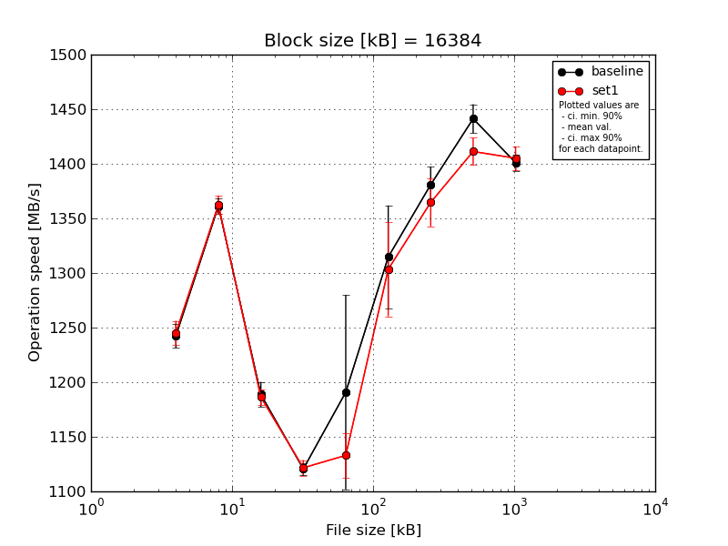
|
Block size [kB] |
File size [kB] |
| 16384 |
32768 |
65536 |
131072 |
262144 |
524288 |
1048576 |
2097152 |
4194304 |
| baseline | 16384 | 1257.27 | 1373.45 | 1207.05 | 1130.78 | 1171.16 | 1289.25 | 1387.43 | 1441.31 | 1409.0 |
| 16384 | 1249.89 | 1353.7 | 1193.32 | 1119.91 | 1130.13 | 1281.3 | 1370.93 | 1441.06 | 1395.33 |
| 16384 | 1240.1 | 1357.95 | 1175.26 | 1117.09 | 1236.42 | 1342.31 | 1402.64 | 1418.67 | 1390.76 |
| 16384 | 1226.9 | 1362.63 | 1183.74 | 1115.8 | 1326.97 | 1271.74 | 1386.37 | 1453.07 | 1408.32 |
| 16384 | 1237.99 | 1358.47 | 1184.64 | 1119.07 | 1089.59 | 1388.53 | 1356.92 | 1452.28 | 1401.64 |
| mean val. |
1242.43 |
1361.24 |
1188.8 |
1120.53 |
1190.86 |
1314.63 |
1380.86 |
1441.28 |
1401.01 |
| standard dev. |
11.64 |
7.53 |
12.04 |
5.95 |
93.45 |
49.55 |
17.46 |
13.88 |
7.98 |
| ci. min. 90% |
1231.33 |
1354.07 |
1177.32 |
1114.85 |
1101.76 |
1267.38 |
1364.21 |
1428.04 |
1393.4 |
| ci. max 90% |
1253.53 |
1368.41 |
1200.28 |
1126.21 |
1279.95 |
1361.87 |
1397.5 |
1454.52 |
1408.62 |
| geom. mean |
1242.39 |
1361.22 |
1188.75 |
1120.52 |
1187.98 |
1313.89 |
1380.77 |
1441.23 |
1400.99 |
| median |
1240.1 |
1358.47 |
1184.64 |
1119.07 |
1171.16 |
1289.25 |
1386.37 |
1441.31 |
1401.64 |
| first quartile |
1237.99 |
1357.95 |
1183.74 |
1117.09 |
1130.13 |
1281.3 |
1370.93 |
1441.06 |
1395.33 |
| third quartile |
1249.89 |
1362.63 |
1193.32 |
1119.91 |
1236.42 |
1342.31 |
1387.43 |
1452.28 |
1408.32 |
| minimum |
1226.9 |
1353.7 |
1175.26 |
1115.8 |
1089.59 |
1271.74 |
1356.92 |
1418.67 |
1390.76 |
| maximum |
1257.27 |
1373.45 |
1207.05 |
1130.78 |
1326.97 |
1388.53 |
1402.64 |
1453.07 |
1409.0 |
| set1 | 16384 | 1231.13 | 1351.75 | 1185.12 | 1128.31 | 1097.03 | 1338.63 | 1329.53 | 1396.18 | 1391.64 |
| 16384 | 1244.95 | 1362.27 | 1180.16 | 1118.56 | 1144.31 | 1297.1 | 1384.8 | 1412.25 | 1405.38 |
| 16384 | 1262.42 | 1375.04 | 1199.58 | 1130.87 | 1146.53 | 1348.58 | 1378.47 | 1425.93 | 1416.73 |
| 16384 | 1247.66 | 1359.16 | 1182.08 | 1115.62 | 1146.22 | 1298.89 | 1377.45 | 1400.05 | 1395.92 |
| 16384 | 1240.39 | 1364.61 | 1184.62 | 1114.76 | 1130.79 | 1233.81 | 1352.94 | 1422.02 | 1415.79 |
| mean val. |
1245.31 |
1362.57 |
1186.31 |
1121.62 |
1132.97 |
1303.4 |
1364.64 |
1411.29 |
1405.09 |
| standard dev. |
11.44 |
8.49 |
7.68 |
7.46 |
21.12 |
45.24 |
23.09 |
13.09 |
11.35 |
| ci. min. 90% |
1234.4 |
1354.47 |
1178.99 |
1114.51 |
1112.84 |
1260.27 |
1342.63 |
1398.81 |
1394.27 |
| ci. max 90% |
1256.22 |
1370.66 |
1193.63 |
1128.74 |
1153.11 |
1346.53 |
1386.65 |
1423.76 |
1415.91 |
| geom. mean |
1245.27 |
1362.55 |
1186.29 |
1121.6 |
1132.81 |
1302.76 |
1364.48 |
1411.24 |
1405.05 |
| median |
1244.95 |
1362.27 |
1184.62 |
1118.56 |
1144.31 |
1298.89 |
1377.45 |
1412.25 |
1405.38 |
| first quartile |
1240.39 |
1359.16 |
1182.08 |
1115.62 |
1130.79 |
1297.1 |
1352.94 |
1400.05 |
1395.92 |
| third quartile |
1247.66 |
1364.61 |
1185.12 |
1128.31 |
1146.22 |
1338.63 |
1378.47 |
1422.02 |
1415.79 |
| minimum |
1231.13 |
1351.75 |
1180.16 |
1114.76 |
1097.03 |
1233.81 |
1329.53 |
1396.18 |
1391.64 |
| maximum |
1262.42 |
1375.04 |
1199.58 |
1130.87 |
1146.53 |
1348.58 |
1384.8 |
1425.93 |
1416.73 |
| baseline set1 difference |
0.23 % |
0.1 % |
-0.21 % |
0.1 % |
-4.86 % |
-0.85 % |
-1.17 % |
-2.08 % |
0.29 % |
| ttest p-value |
0.7032 |
0.8003 |
0.7068 |
0.8047 |
0.2137 |
0.718 |
0.2456 |
0.0079 |
0.5291 |
| ttest equality |
SAME |
SAME |
SAME |
SAME |
SAME |
SAME |
SAME |
DIFF |
SAME |